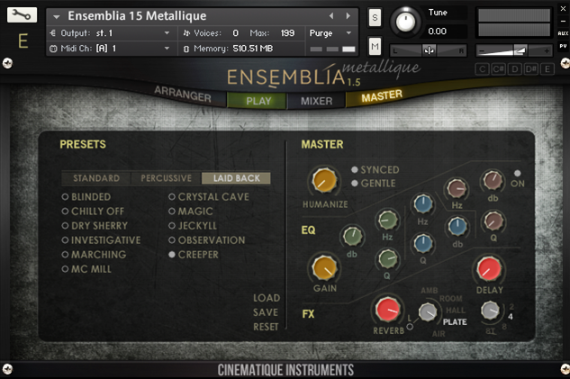
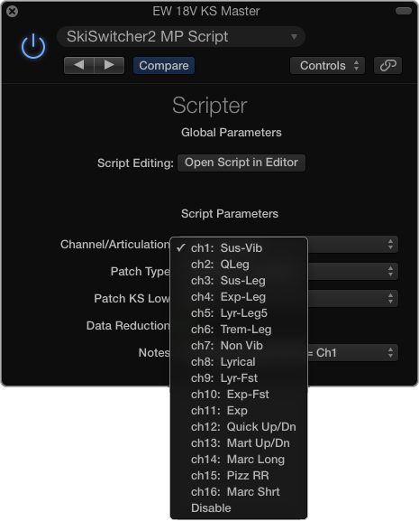
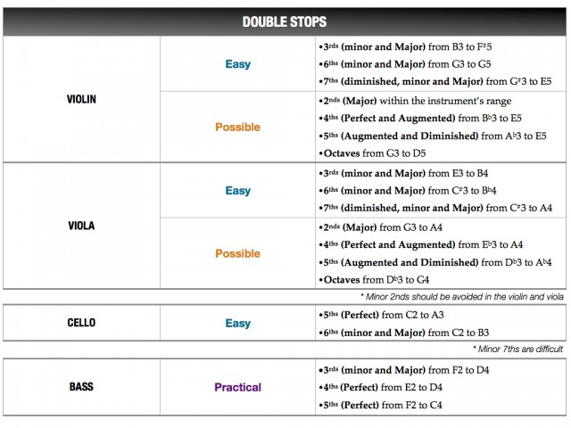
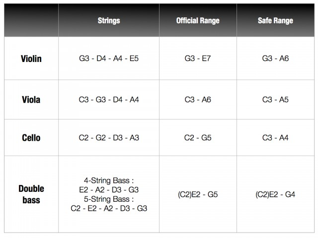
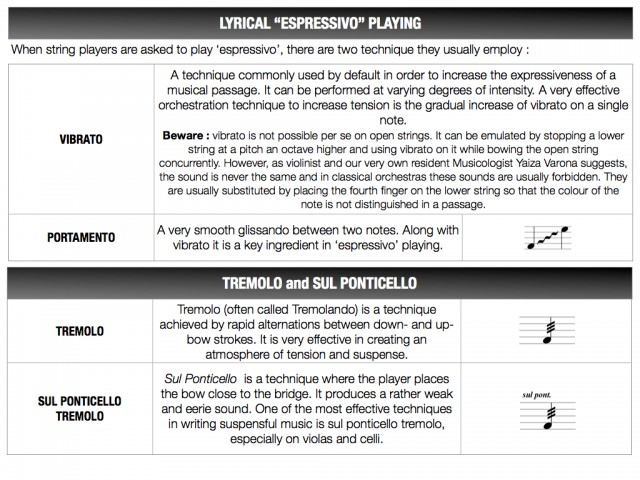
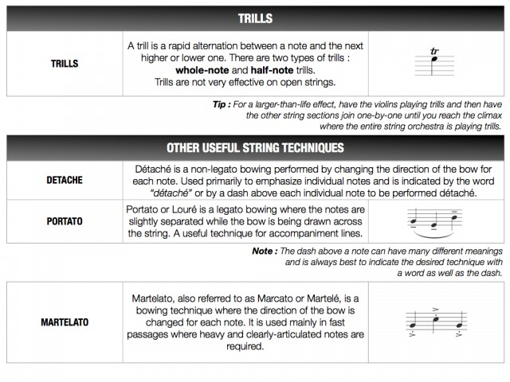
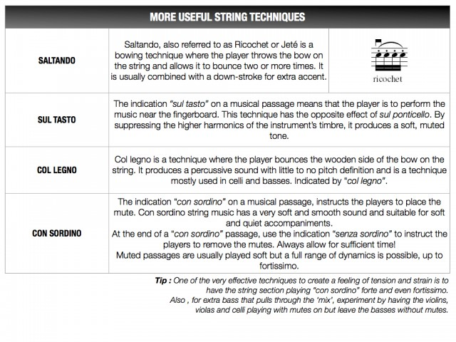

<?xml version="1.0" encoding="UTF-8"?><rss version="2.0"
	xmlns:content="http://purl.org/rss/1.0/modules/content/"
	xmlns:wfw="http://wellformedweb.org/CommentAPI/"
	xmlns:dc="http://purl.org/dc/elements/1.1/"
	xmlns:atom="http://www.w3.org/2005/Atom"
	xmlns:sy="http://purl.org/rss/1.0/modules/syndication/"
	xmlns:slash="http://purl.org/rss/1.0/modules/slash/"
	xmlns:itunes="http://www.itunes.com/dtds/podcast-1.0.dtd"
xmlns:rawvoice="http://www.rawvoice.com/rawvoiceRssModule/"
xmlns:googleplay="http://www.google.com/schemas/play-podcasts/1.0/play-podcasts.xsd"
>

<channel>
	<title>Stellita Loukas &#8211; SCOREcastOnline.com</title>
	<atom:link href="." rel="self" type="application/rss+xml" />
	<link>http://www.scorecastonline.com</link>
	<description>Global Community for the Professional Media Composer</description>
	<lastBuildDate>Mon, 19 Jun 2017 08:43:18 +0000</lastBuildDate>
	<language>en-US</language>
	<sy:updatePeriod>hourly</sy:updatePeriod>
	<sy:updateFrequency>1</sy:updateFrequency>
	<generator>https://wordpress.org/?v=4.8</generator>
<!-- podcast_generator="Blubrry PowerPress/7.0.4 beta" mode="advanced" feedslug="feed" -->
	<itunes:summary>Global Community for the Professional Media Composer</itunes:summary>
	<itunes:author>Stellita Loukas &#8211; SCOREcastOnline.com</itunes:author>
	<itunes:image href="../../../wp-content/plugins/powerpress/itunes_default.jpg" />
	<itunes:subtitle>Global Community for the Professional Media Composer</itunes:subtitle>
	<image>
		<title>Stellita Loukas &#8211; SCOREcastOnline.com</title>
		<url>../../../wp-content/uploads/powerpress/sig-SCO.jpg</url>
		<link>http://www.scorecastonline.com</link>
	</image>
<site xmlns="com-wordpress:feed-additions:1">29563098</site>	<item>
		<title>REVIEW: EastWest Composer Cloud</title>
		<link>../../../2016/06/18/ewcloud/</link>
		<comments>../../../2016/06/18/ewcloud/#respond</comments>
		<pubDate>Sat, 18 Jun 2016 17:14:30 +0000</pubDate>
		<dc:creator><![CDATA[Stellita Loukas]]></dc:creator>
				<category><![CDATA[Product reviews]]></category>
		<category><![CDATA[ethnic]]></category>
		<category><![CDATA[gear]]></category>
		<category><![CDATA[sound design]]></category>
		<category><![CDATA[strings]]></category>
		<category><![CDATA[subscription]]></category>

		<guid isPermaLink="false">../../../?p=2290</guid>
		<description><![CDATA[A terrific solution for anyone looking to expand or cultivate a wide palette with just one purchase.]]></description>
				<content:encoded><![CDATA[<p><strong>COMPOSER CLOUD</strong> by <a href="http://soundsonline.com" target="_blank">Eastwest</a><br />
<strong>$29.99 &#8211; $49.99/month</strong></p>
<hr />
<p>EastWest is very well-known name in all composer households. Their ground-breaking EastWest Quantum Leap Symphony Orchestra was one of the first full-fledged orchestral sample libraries to be developed and still is one of the best entry-level libraries around.</p>
<p class="p1"><span class="s1">Since then, EastWest has continued to constantly innovate by presenting top-quality indispensable tools, spanning a large variety of styles. In 2015, EastWest introduced Composer Cloud and became the first sample library developer to offer a subscription plan for a sample-based product. </span></p>
<p class="p1"><span class="s1">While this new model was initially met with mixed responses across the composer community, more and more composers are signing up. So let’s take a look at what the Composer Cloud is and how it can enhance your daily work.</span></p>
<div class="page" title="Page 1">
<div class="layoutArea">
<div class="column">
<h2>General Overview</h2>
<div class="page" title="Page 1">
<div class="layoutArea">
<div class="column">
<p class="p1"><strong>HOW IT WORKS</strong></p>
<p class="p1"><span class="s1">The concept is rather simple really. All you need to do is download the EW Installation center from the Support section of the website. This requires you to sign into your personal EW account and as soon as the Installation Center is installed on your computer, all your previous purchases (before the introduction of the subscription model) and your current subscription are automatically reflected. </span></p>
<p class="p1"><span class="s1">The Installation Center conveniently manages everything pertaining to your EW libraries. It allows you to download, install, and activate any library you wish, it displays any updates available for your current EW software and it also allows you to relocate libraries should you choose to migrate them to another disk. </span></p>
<p class="p1"><span class="s1">A very pleasant surprise was the download speeds. Downloading almost all of the EW libraries took me just a few hours on a 50bpm DSL connection and the entire process was rather painless.</span></p>
<p class="p1"><span class="s1"><b>THE SUBSCRIPTION PLANS</b></span></p>
<p class="p1"><span class="s1">The introduction of Composer Cloud essentially gives a subscriber access to over 10,000 instruments for a yearly or monthly fee. All Composer cloud subscriptions include the entire EW catalog of libraries and the only difference is the different microphone positions included. </span></p>
<p class="p1"><span class="s1">The subscription model comes in 3 different versions : <em>Composer Cloud</em>, <em>Composer Cloud </em>X, and <em>Composer Cloud Plus</em>:</span></p>
<table style="height: 462px;" width="838" cellspacing="0" cellpadding="0">
<tbody>
<tr>
<td valign="top"></td>
<td valign="top">
<p style="text-align: center;"><span style="color: #000000; font-family: Helvetica; font-size: small;"><b>Composer Cloud</b></span></p>
</td>
<td valign="top">
<p style="text-align: center;"><span style="color: #000000; font-family: Helvetica; font-size: small;"><b>Composer Cloud X</b></span></p>
</td>
<td valign="top">
<p style="text-align: center;"><span style="color: #000000; font-family: Helvetica; font-size: small;"><b>Composer Cloud Plus</b></span></p>
</td>
</tr>
<tr>
<td valign="top"><span style="color: #000000; font-family: Helvetica; font-size: small;"><b>Cost</b></span></td>
<td valign="top">
<p align="center"><span style="color: #000000; font-family: Helvetica; font-size: small;">$29.99</span></p>
</td>
<td valign="top">
<p align="center"><span style="color: #000000; font-family: Helvetica; font-size: small;">$29.99</span></p>
</td>
<td valign="top">
<p align="center"><span style="color: #000000; font-family: Helvetica; font-size: small;">$49.99</span></p>
</td>
</tr>
<tr>
<td valign="top"><span style="color: #000000; font-family: Helvetica; font-size: small;"><b>Commitment</b></span></td>
<td valign="top">
<p align="center"><span style="color: #000000; font-family: Helvetica; font-size: small;">Monthly</span></p>
</td>
<td valign="top">
<p align="center"><span style="color: #000000; font-family: Helvetica; font-size: small;">Yearly (paid monthly)</span></p>
</td>
<td valign="top">
<p align="center"><span style="color: #000000; font-family: Helvetica; font-size: small;">Yearly (paid monthly)</span></p>
</td>
</tr>
<tr>
<td valign="top"><span style="color: #000000; font-family: Helvetica; font-size: small;"><b>No of Instruments</b></span></td>
<td valign="top">
<p align="center"><span style="color: #000000; font-family: Helvetica; font-size: small;">10,012</span></p>
</td>
<td valign="top">
<p align="center"><span style="color: #000000; font-family: Helvetica; font-size: small;">10,012</span></p>
</td>
<td valign="top">
<p align="center"><span style="color: #000000; font-family: Helvetica; font-size: small;">12,569</span></p>
</td>
</tr>
<tr>
<td valign="top"><span style="color: #000000; font-family: Helvetica; font-size: small;"><b>Mic Positions</b></span></td>
<td valign="top">
<p align="center"><span style="color: #000000; font-family: Helvetica; font-size: small;">1</span></p>
</td>
<td valign="top">
<p align="center"><span style="color: #000000; font-family: Helvetica; font-size: small;">2</span></p>
</td>
<td valign="top">
<p align="center"><span style="color: #000000; font-family: Helvetica; font-size: small;">ALL</span></p>
</td>
</tr>
<tr>
<td valign="top"><span style="color: #000000; font-family: Helvetica; font-size: small;"><b>Bit Depth</b></span></td>
<td valign="top">
<p align="center"><span style="color: #000000; font-family: Helvetica; font-size: small;">16 bit</span></p>
</td>
<td valign="top">
<p align="center"><span style="color: #000000; font-family: Helvetica; font-size: small;">16 bit</span></p>
</td>
<td valign="top">
<p align="center"><span style="color: #000000; font-family: Helvetica; font-size: small;">24 bit</span></p>
</td>
</tr>
<tr>
<td valign="top"><span style="color: #000000; font-family: Helvetica; font-size: small;"><b>Data Size</b></span></td>
<td valign="top">
<p align="center"><span style="color: #000000; font-family: Helvetica; font-size: small;">758 GB</span></p>
</td>
<td valign="top">
<p align="center"><span style="color: #000000; font-family: Helvetica; font-size: small;">~ 1TB</span></p>
</td>
<td valign="top">
<p align="center"><span style="color: #000000; font-family: Helvetica; font-size: small;">~ 1.8TB</span></p>
</td>
</tr>
<tr>
<td valign="top"><span style="color: #000000; font-family: Helvetica; font-size: small;"><b>Delivery</b></span></td>
<td valign="top">
<p align="center"><span style="color: #000000; font-family: Helvetica; font-size: small;">Download</span></p>
</td>
<td valign="top">
<p align="center"><span style="color: #000000; font-family: Helvetica; font-size: small;">Download</span></p>
</td>
<td valign="top">
<p align="center"><span style="color: #000000; font-family: Helvetica; font-size: small;">Hard Drive</span></p>
</td>
</tr>
</tbody>
</table>
<p class="p1"><span class="s1">If you are a student, you can also take advantage of the Composer Cloud Student, a monthly or yearly plan that costs $14.99 per month and includes 7 products of your choice. </span></p>
<p class="p1"><span class="s1">EW also offers the possibility to upgrade to a higher plan at any point in your subscription.</span></p>
<h2 class="p1">The PLAY Engine</h2>
<blockquote>
<p class="p1">&#8220;But… but… but… it relies on the PLAY Engine&#8221;</p>
</blockquote>
<p class="p1"><span class="s1">I know, I know. I must admit that I have had my fair share of troubles with the PLAY engine, but not so many that would stop me from enjoying the vast array of sound colors at my fingertips. PLAY is updated rather regularly and the EW support team is incredibly responsive and accommodating. Mr. Joey Medina was particularly helpful in setting me up and patiently answering any my questions.</span></p>
</div>
</div>
</div>
</div>
</div>
</div>
<div class="page" title="Page 4">
<div class="layoutArea">
<div class="column">
<h2>Performance</h2>
</div>
</div>
</div>
<div class="page" title="Page 5">
<div class="layoutArea">
<div class="column">
<p class="p1"><span class="s1">I took three months to test the basic Composer Cloud subscription in several different projects, including ones where time was absolutely of the essence. Although I am not using any SSDs for streaming my samples (just plain old 7200rpm drives), aside from a slightly increased loading time, everything worked well and the system was rather stable. </span></p>
<p class="p1"><span class="s1">Not having used any Hollywood products before I was very impressed by the very expressive quality of many of the instruments, especially the legato ones. Aside from all the very well-known libraries, all subscriptions include some lesser-known older libraries such as “56’ Stratocaster”, “Funky Ass Loops”, “Scoring Tools” and I was able to discover many hidden gems in there that are still extremely useful.</span></p>
<p class="p1"></p>
<h2>Final Observations</h2>
<p class="p1"><span class="s1">I can’t say that I will be using all 10,000 instruments in my work regularly but in my opinion, the Composer Cloud is definitely worth its money, especially now that they have introduced a month-to-month subscription. I think of it this way: very often we part with $300-$400 for a library which sounds amazing only to later find out that we can use maybe half of the patches as we imagined we would and the rest fall into obscurity. Well, spending the same amount of money for access to 10,000 instruments for an entire year (even if hypothetically we only used 5,000 of these) makes sense in my mind. Besides, new libraries are coming out every month and many sample libraries become obsolete after a few years (simply because realism is always taken to new levels with each new stride in technology). Instead of spending money on one library in perpetuity &#8211; which could become obsolete after a few years &#8211; I’d rather spend the same amount of money to ‘borrow’ 53+ of them for a year. This becomes relatively obvious when you consider that your needs often change as a composer. Your sampling arsenal could change drastically within a year just based on trends and musical tastes.</span></p>
<p class="p1">The EastWest Composer Cloud is a terrific solution for anyone looking to expand or cultivate a wide palette with just one purchase. As long as EastWest continues to innovate in the sampling market by adding products to their CC lineup over time, subscribing to this service could be a very wise move for anyone looking for the highest quality in sampled sounds.</p>
<hr />
<p class="p1"><strong>COMPOSER CLOUD</strong> by <a href="http://soundsonline.com" target="_blank">Eastwest</a><br />
<strong>$29.99 &#8211; $49.99/month</strong></p>
</div>
</div>
</div>
 <!-- WP Biographia v3.3.2 -->
<div class="wp-biographia-container-top" style="background-color: #eadcdc; border-top: 4px solid #000000;"><div class="wp-biographia-pic" style="height:100px; width:100px;"></div><div class="wp-biographia-text"><h3><a href=".." title="Stellita Loukas">Stellita Loukas</a></h3><p>Stellita Loukas is a Greek composer based in Athens and is Director of Resources for SCOREcastOnline.com. Though Stellita began composing at the age of twelve, it was after obtaining her BSc in Management Sciences from Warwick that she decided music would absolutely be her full-time occupation. Since 2005, she has studied jazz &amp; latin piano, jazz harmony, arranging, composition, tonal harmony, electronic dance music production, music technology, and classical and modern orchestration and still going.She is currently writing music for an upcoming feature film as well as for various US TV shows.</p><div class="wp-biographia-links"><small><ul class="wp-biographia-list wp-biographia-list-icon"><li><a href="http://www.stellitaloukas.com" target="_blank" title="Stellita Loukas On The Web" class="wp-biographia-link-icon"></a></li><li><a href="www.facebook.com/stellitak" target="_blank" title="Stellita Loukas On Facebook" class="wp-biographia-link-icon"></a></li><li><a href=".." target="_blank" title="More Posts By Stellita Loukas" class="wp-biographia-link-icon"></a></li></ul></small></div></div></div><!-- WP Biographia v3.3.2 -->
]]></content:encoded>
			<wfw:commentRss>../../../2016/06/18/ewcloud/feed/</wfw:commentRss>
		<slash:comments>0</slash:comments>
	<post-id xmlns="com-wordpress:feed-additions:1">2290</post-id>	</item>
		<item>
		<title>REVIEW: Marble by Cinematique Instruments</title>
		<link>../../../2016/03/30/marble/</link>
		<comments>../../../2016/03/30/marble/#respond</comments>
		<pubDate>Thu, 31 Mar 2016 06:28:59 +0000</pubDate>
		<dc:creator><![CDATA[Stellita Loukas]]></dc:creator>
				<category><![CDATA[Product reviews]]></category>
		<category><![CDATA[effects]]></category>
		<category><![CDATA[gear]]></category>
		<category><![CDATA[kontakt]]></category>
		<category><![CDATA[sound design]]></category>
		<category><![CDATA[strings]]></category>

		<guid isPermaLink="false">../../../?p=2280</guid>
		<description><![CDATA[For live and on-the-fly sound shaping that features well-recorded source material bundled with extensive effects options, Marble might be your new go-to tool.]]></description>
				<content:encoded><![CDATA[<p><strong>MARBLE</strong> by <a href="http://www.cinematique-instruments.com/page_marble.php" target="_blank">Cinematique Instruments</a><br />
<strong>240 €/ $270</strong></p>
<hr />
<p>&nbsp;</p>
<p>After releasing the <a href="../../../2016/01/11/ensemblia" target="_blank">Ensemblia</a> series last year, Germany-based developer <b><a href="http://cinematique-instruments.com/">Cinematique Instruments</a> </b>decided to switch gears and create a unique combination of their trademark traditional-meets-bizarre sounds with clever and innovative programming. The result was <strong>Marble</strong>.</p>
<div class="page" title="Page 1">
<div class="layoutArea">
<div class="column">
<p class="p1"><span class="s1">Marble is a KONTAKT-based library that runs on the full version of KONTAKT 5.3, comes with more than 800 presets, and is comprised of more than 2,500 samples.</span></p>
<h2>General Overview</h2>
<div class="page" title="Page 1">
<div class="layoutArea">
<div class="column">
<p class="p1"><span class="s1">At the core of <strong>Marble</strong> lie two parallel sound slots (called “Tracks”) equipped with their respective 16-step sequencers. But there is a twist; each of these two sequencers is completely ‘open’ &#8212; in other words, you can tweak every single one of the twelve parameters provided for each sound slot, individually for each of the 16 steps of the sequencer.</span></p>
<p class="p1"><span class="s1">One of the greatest values of this library is its flexibility and tweakability. Cinematique Instruments essentially provide us with a complex yet extremely intuitive and simple-to-use ‘system’ that allows us to combine any of the sixty-four sound sources in as many ways as our minds can imagine, sequence them and tweak each step of the sequence individually and, finally, manipulate everything in real time. </span></p>
<p class="p1"><span class="s1">The beauty of Marble lies at a single rotating ring that controls an entire effects matrix and which can allow you to shape your sound in real time. </span></p>
<p class="p1"><span class="s1"><b>THE GUI</b></span></p>
<p class="p1"><span class="s1">One of the first things I immediately loved about this library is the deceptively simple GUI. It is nicely designed and very neatly organized in a way that makes it easy to navigate. Everything is exactly where you expect it to be and you can create your own complex evolving sounds at the click of a button while being blissfully unaware of the complex mechanics and programming lying ‘behind the scenes’.  </span></p>
<p class="p1"><span class="s1">The entire <strong>Marble</strong> library is accessible via a single Kontakt-instrument patch that is organized into 4 tabs : </span></p>
<p class="p1"><span class="s1">1. The “PRESETS” tab allows you to choose any of the included 800 presets at the click of a button. Presets have been organized into categories and sub-categories that are sure to strike a cord with every modern composer, including Ambiences, Bass Lines, Sequences, Drum Beats, Rhythm Essentials and more.</span></p>
<p class="p1"><span class="s1">2. The “TRACKS” tab is where you can select a different sound source for each of the two “Tracks” and set the values for each of the two ‘open’ step sequencers. You can customize parameters such as velocity, note length, pan, tuning, shape, filter, LFO stutter, reverb, delay, time shifting and playing direction.</span></p>
<p class="p1"><span class="s1">3. The final sound/combination of the two tracks then passes through a complex effect matrix which you can customize and control in Real-Time through the “ASSIGN” tab. A 127-step sequencer allows you to easily assign parameter values for each of the onboard effects.</span></p>
<p class="p1"><span class="s1">4. Finally, the “MASTER” tab is where you can tweak your sound with a simple turning of the Marble ring (which is connected to the effects matrix at the “ASSIGN” tab), “Freeze” the sound if you wish to play along with the created sequence and set quantization and tempo parameters. </span></p>
<h2 class="p1">Malleability</h2>
<p class="p1">One thing Cinematique Instruments seems to have down really well is all the built-in ways you can mold and fashion their original sample sources into your own unique finished material sounds. With included sound sources such as drum kits, acoustic and electric basses, struck percussion, experimental string FX, woodwinds, classic synthesizers, skin percussions, glitch FX and electronic oddities galore, your possibilities are virtually endless. After you tweak to your heart&#8217;s delight, you can run the finished shape through <strong>Marble&#8217;s</strong> deep FX matrix. This process houses an extensive effects rack module, which includes low and high pass filters, face-ripping distortions, multi-band compression, randomizers, reverbs and more. By simply applying any one or combination of these parameters to your creation, Marble takes on a completely different vibe and enables you to throw your own voicings behind typically traditional instrument sources, making them perfect for video game music, trailer music production, film and TV work, or experimental media applications.</p>
<p class="p1">And…… all of this can happen in Real Time. If you are a live stage performer, this is a huge advantage that most sound libraries are slowly becoming hip to, but <strong>Marble</strong> gets exactly right directly out of the box. Every parameter is flexible on the fly and can be recorded with DAW automation for recall later on or real-time experimental performance – a major asset for the live player or experimental tweakhead composer.</p>
</div>
</div>
</div>
</div>
</div>
</div>
<div class="page" title="Page 4"></div>
<div class="page" title="Page 4">
<div class="layoutArea">
<div class="column">
<h2>Final Observations</h2>
</div>
</div>
</div>
<div class="page" title="Page 5">
<div class="layoutArea">
<div class="column">
<p class="p1"><span class="s1"><strong>Marble</strong> is a well-designed library that has clearly been created with a lot of forethought into how modern composers like to work and create. The sounds providing the raw material are top quality and have been recorded to Cinematique Instruments’ excellent standards. The ‘open’ 16-step sequencers offer a myriad of sonic possibilities and the fact that the effects matrix offers Real-Time dynamic sound shaping is, in my opinion, this library’s greatest asset. </span></p>
<p class="p1"><span class="s1"><strong>Marble</strong> is extremely playable and a lot of thought has evidently gone into creating a playable instrument that responds well to both chords and melodic lines, allowing users the freedom to create their own unique soundscapes via a simple and intuitive interface. </span></p>
<p class="p1"><span class="s1">Once again, Cinematique Instruments have created an excellent product that can easily find its way into any modern composer’s arsenal.</span></p>
<hr />
<p class="p1"><strong>MARBLE</strong> by <a href="http://www.cinematique-instruments.com/page_marble.php" target="_blank">Cinematique Instruments</a><br />
<strong>240 €/ $270</strong></p>
</div>
</div>
</div>
 <!-- WP Biographia v3.3.2 -->
<div class="wp-biographia-container-top" style="background-color: #eadcdc; border-top: 4px solid #000000;"><div class="wp-biographia-pic" style="height:100px; width:100px;"></div><div class="wp-biographia-text"><h3><a href=".." title="Stellita Loukas">Stellita Loukas</a></h3><p>Stellita Loukas is a Greek composer based in Athens and is Director of Resources for SCOREcastOnline.com. Though Stellita began composing at the age of twelve, it was after obtaining her BSc in Management Sciences from Warwick that she decided music would absolutely be her full-time occupation. Since 2005, she has studied jazz &amp; latin piano, jazz harmony, arranging, composition, tonal harmony, electronic dance music production, music technology, and classical and modern orchestration and still going.She is currently writing music for an upcoming feature film as well as for various US TV shows.</p><div class="wp-biographia-links"><small><ul class="wp-biographia-list wp-biographia-list-icon"><li><a href="http://www.stellitaloukas.com" target="_blank" title="Stellita Loukas On The Web" class="wp-biographia-link-icon"></a></li><li><a href="www.facebook.com/stellitak" target="_blank" title="Stellita Loukas On Facebook" class="wp-biographia-link-icon"></a></li><li><a href=".." target="_blank" title="More Posts By Stellita Loukas" class="wp-biographia-link-icon"></a></li></ul></small></div></div></div><!-- WP Biographia v3.3.2 -->
]]></content:encoded>
			<wfw:commentRss>../../../2016/03/30/marble/feed/</wfw:commentRss>
		<slash:comments>0</slash:comments>
	<post-id xmlns="com-wordpress:feed-additions:1">2280</post-id>	</item>
		<item>
		<title>REVIEW: Ensemblia by Cinematique Instruments</title>
		<link>../../../2016/01/11/ensemblia/</link>
		<comments>../../../2016/01/11/ensemblia/#respond</comments>
		<pubDate>Mon, 11 Jan 2016 23:16:36 +0000</pubDate>
		<dc:creator><![CDATA[Stellita Loukas]]></dc:creator>
				<category><![CDATA[Product reviews]]></category>
		<category><![CDATA[ethnic instruments]]></category>
		<category><![CDATA[gear]]></category>
		<category><![CDATA[kontakt]]></category>
		<category><![CDATA[orchestra]]></category>
		<category><![CDATA[sounds]]></category>
		<category><![CDATA[strings]]></category>

		<guid isPermaLink="false">../../../?p=2271</guid>
		<description><![CDATA[There are many libraries out there that do the ‘big’ sound incredibly well, but what happens when your cue demands a smaller, more intimate sound? Introducing… Ensemblia.]]></description>
				<content:encoded><![CDATA[<p><strong>ENSEMBLIA</strong> by <a href="http://cinematique-instruments.com/page_ensemblia15.php" target="_blank">Cinematique Instruments</a><br />
<strong>219 €/ $245</strong></p>
<p><strong>METALLIQUE</strong><br />
<strong>115 €/ $129</strong></p>
<p><strong>STRINGED</strong><br />
<strong>115 €/ $129</strong></p>
<hr />
<div class="page" title="Page 1">
<div class="layoutArea">
<div class="column">
<p><span class="s1"><a href="http://cinematique-instruments.com/"><b>Cinematique Instruments</b></a></span><span class="s2"> is a Germany-based developer of unique, odd and rare sample libraries. Comprising of a group of composers/producers, the Cinematique Instruments team is highly attuned to the needs of the modern composer and manages to continuously come up with unconventional yet highly usable libraries.</span></p>
<p class="p1"><span class="s2">Their latest flagship product, <a href="http://cinematique-instruments.com/page_ensemblia15.php" target="_blank">Ensemblia</a>, is a unique combination of traditional orchestral and rare modern instruments that is aiming to recreate the sound of the modern chamber orchestra and provide composers with an intuitive tool to create natural-sounding productions.</span></p>
<p class="p1"><span class="s2">Ensemblia is a KONTAKT-based library that runs on the full version of both KONTAKT 4 and 5 and has recently been updated to version 1.5, adding tons of new features and new instruments. What’s more, following the success of the original Ensemblia library, the Cinematique Instruments team is about to release two further variations, Metallique and Stringed. </span></p>
<p class="p1"><span class="s2">So let’s take a look at what this ‘trio’ can add to your arsenal!</span></p>
<h2>General Overview</h2>
<div class="page" title="Page 1">
<div class="layoutArea">
<div class="column">
<p class="p1"><span class="s1">The original library comes with a wealth of sonic colors, from classical orchestral and mallet instruments to odd synths and bowed guitars. But the real beauty of Ensemblia, where all sounds come truly alive, is in the clever Kontakt patch programming. </span></p>
<p class="p1"><span class="s1">The entire library is organized in just two patches: Longs and Shorts. The large variety of presets available are accessed via the well thought-out user interface. </span></p>
<p class="p1"><span class="s1"><b>Longs</b></span></p>
<p class="p1"><span class="s1">The Longs patch allows you to load up to 7 different instruments, each on a dedicated channel strip that gives you individual control over the volume, panning, reverb, and transposition. The magic, however, lies in the Voicing section where you can determine how each chord you play on the keyboard is distributed to the loaded instruments. For example, you can load all four orchestral strings, each on its individual slot, and instruct Ensemblia to assign the lowest note of your chords to the bass, the highest to the violin and the middle ones to the viola and cello.</span></p>
<p class="p1"><span class="s1">As if this isn’t clever enough, the &#8216;Longs&#8217; patch has been programmed in such a way so as to automatically recognize where to assign each new note you play, based on its distance from the previous notes. If, for example, you have a Csus4 chord and the F is assigned to the viola, when you move to a C triad, the E will automatically be played by the viola, too!</span></p>
<p class="p1"><span class="s1">While you are free to mix and match the available instruments to your heart’s delight, the CI team has provided a wealth of presets neatly organized into intuitive categories, to suit all tastes.</span></p>
<p class="p1"></p>
<p class="p1"><span class="s1"><b>Shorts</b></span></p>
<p class="p1"><span class="s1">The Shorts patch is excellent for rhythmic figures and ostinato and works in the exact same way (7 instrument slots with individual controls) but it also features an “Arranger” page that allows you to program the exact rhythm each instrument is playing. The presets provided are again well thought-out and neatly organized and can give you anything from dark and frantic to light and atmospheric. </span></p>
<p class="p1"><span class="s1">In both patches, a comprehensive “Mixer” section allows you to shape your sound to taste and make it as subtle or as overpowering as you wish!</span></p>
<p class="p1"></p>
</div>
</div>
</div>
</div>
</div>
</div>
<div class="page" title="Page 1">
<div class="layoutArea">
<div class="column">
<p>&nbsp;</p>
<h2>Ensemblia &#8220;<span class="s1"><b>Metallique&#8221;</b></span></h2>
</div>
</div>
</div>
<div class="page" title="Page 4">
<div class="layoutArea">
<div class="column">
<p class="p1"><span class="s1">Based on the same principles as the original Ensemblia library, Ensemblia Metallique comprises of a large range of metallic mallet instruments (anything and everything from vibraphone to a salad bowl!), all accessible via a “Shorts” patch which allows you to mix and match instruments, program your own rhythms and further shape your sound via the Mixer section.</span></p>
<p class="p1"></p>
<h2 class="p1">Ensemblia &#8220;Stringed&#8221;</h2>
<p class="p1"><span class="s1">The Stringed variation of Ensemblia brings together all the rare and odd string instruments the CI team has ever recorded: autoharp, monochord, kantele, lute, hammered dulcimer, zither and many more. Since these are mostly plucked instruments, Ensemblia Stringed comprises of just the “Shorts” patch, but this is enough to satisfy even the most demanding tastes.</span></p>
<p class="p1"></p>
<p class="p3">
</div>
</div>
</div>
<div class="page" title="Page 4">
<div class="layoutArea">
<div class="column">
<h2></h2>
<h2>Final Observations</h2>
</div>
</div>
</div>
<div class="page" title="Page 5">
<div class="layoutArea">
<div class="column">
<p class="p1"><span class="s1">There is an unwritten rule-of-thumb that the smaller the ensemble you are composing/orchestrating for the more careful you have to be when choosing voicings, voice leading, doublings, etc. This is one of the reasons why it is said that writing for a string quartet, for example, is much harder than writing for a full string orchestra. </span></p>
<p class="p1"><span class="s1">The same is true for sample libraries — large and ‘epic’ ensembles are often easier to make sound realistic but small and intimate are harder. There are many libraries out there that do the ‘big’ sound incredibly well, but what happens when your cue demands a smaller, more intimate sound? </span></p>
<p class="p1"><span class="s1">This is where Ensemblia excels. It is a library that has clearly been designed with the modern composer in mind. It comes to fill a ‘void’ in the sample library market and it does so incredibly well. Ensemblia offers a large variety of sonic possibilities in an extremely well recorded and programmed package. Added with its beautiful interface, and you have an easy to find your way around the library and create the exact sound you are after. </span></p>
</div>
</div>
</div>
<hr />
<p><strong>ENSEMBLIA</strong> by <a href="http://cinematique-instruments.com/page_ensemblia15.php" target="_blank">Cinematique Instruments</a><br />
<strong>219 €/ $245</strong></p>
<p><strong>METALLIQUE</strong><br />
<strong>115 €/ $129</strong></p>
<p><strong>STRINGED</strong><br />
<strong>115 €/ $129</strong></p>
 <!-- WP Biographia v3.3.2 -->
<div class="wp-biographia-container-top" style="background-color: #eadcdc; border-top: 4px solid #000000;"><div class="wp-biographia-pic" style="height:100px; width:100px;"></div><div class="wp-biographia-text"><h3><a href=".." title="Stellita Loukas">Stellita Loukas</a></h3><p>Stellita Loukas is a Greek composer based in Athens and is Director of Resources for SCOREcastOnline.com. Though Stellita began composing at the age of twelve, it was after obtaining her BSc in Management Sciences from Warwick that she decided music would absolutely be her full-time occupation. Since 2005, she has studied jazz &amp; latin piano, jazz harmony, arranging, composition, tonal harmony, electronic dance music production, music technology, and classical and modern orchestration and still going.She is currently writing music for an upcoming feature film as well as for various US TV shows.</p><div class="wp-biographia-links"><small><ul class="wp-biographia-list wp-biographia-list-icon"><li><a href="http://www.stellitaloukas.com" target="_blank" title="Stellita Loukas On The Web" class="wp-biographia-link-icon"></a></li><li><a href="www.facebook.com/stellitak" target="_blank" title="Stellita Loukas On Facebook" class="wp-biographia-link-icon"></a></li><li><a href=".." target="_blank" title="More Posts By Stellita Loukas" class="wp-biographia-link-icon"></a></li></ul></small></div></div></div><!-- WP Biographia v3.3.2 -->
]]></content:encoded>
			<wfw:commentRss>../../../2016/01/11/ensemblia/feed/</wfw:commentRss>
		<slash:comments>0</slash:comments>
	<post-id xmlns="com-wordpress:feed-additions:1">2271</post-id>	</item>
		<item>
		<title>REVIEW: SkiSwitcher 2 by Peter Schwartz</title>
		<link>../../../2015/11/29/skiswitcher2/</link>
		<comments>../../../2015/11/29/skiswitcher2/#respond</comments>
		<pubDate>Mon, 30 Nov 2015 01:16:43 +0000</pubDate>
		<dc:creator><![CDATA[Stellita Loukas]]></dc:creator>
				<category><![CDATA[Product reviews]]></category>
		<category><![CDATA[gear]]></category>
		<category><![CDATA[logic]]></category>
		<category><![CDATA[scripting]]></category>
		<category><![CDATA[utilities]]></category>

		<guid isPermaLink="false">../../../?p=2254</guid>
		<description><![CDATA[Modern composers are spending less time composing music and increasingly more time programming MIDI data. Ski Switcher 2 makes that process much easier and certainly far less painful.]]></description>
				<content:encoded><![CDATA[<p><strong>SKI SWITCHER 2</strong> for Logic X by Peter Schwartz<br />
<strong>$49.00<br />
</strong>Purchase SKI SWITCHER and get more information at <a href="http://www.skiswitcher.com/">SkiSwitcher.com</a></p>
<hr />
<div class="page" title="Page 1">
<div class="layoutArea">
<div class="column">
<p><span class="s1">If you are a Logic user, chances are you’ve come across the username “Ski” at one of the numerous online Logic forums. Ski (a.k.a <a href="http://www.peterschwartzmusic.com"><span class="s2">Peter Schwartz</span></a>) is a composer, orchestrator, and arranger whose long and impressive career has allowed him to work with artists such as Madonna, Michael Jackson, David Bowie, Mariah Carey and Pet Shop Boys to name a few, and his scoring clients include Disneytoons, Mattel, FOX, Warner Bros and many more. Peter Schwartz is also one of MacProVideo’s most pre-eminent <a href="https://www.macprovideo.com/about/trainers/peterschwartz"><span class="s2">Logic Pro instructors</span></a> and has produced Logic-oriented courses in MIDI Orchestration, Template Building and Score Editing. </span></p>
<p class="p1"><span class="s1">Throughout all his musical escapades for the past 25+ years Ski has been loyal to Logic<span class="Apple-converted-space"> </span>and is one of the few people on this planet who actually really know Logic inside-out. Thriving to always improve his workflow and make the best out of Logic, Ski has listened to all of our prayers and created something that can be easily called the equivalent of “VST Expression Maps” for Logic Pro. </span></p>
<h2>General Overview</h2>
<div class="page" title="Page 1">
<div class="layoutArea">
<div class="column">
<p class="p1"><span class="s1">Peter developed his original version of SkiSwitcher in 2008 out of frustration that keyswitching patches didn&#8217;t always play back with the correct articulation. This is a problem you’re probably familiar with, too! Though the original version of the system solved this problem, the newly-introduced scripting capabilities of Logic Pro X allowed him to both simplify its operation and greatly expand its capabilities beyond just working with keyswitching patches.</span></p>
<p class="p1"><span class="s1">SkiSwitcher2 is an articulation switching system that allows you compose and produce music without having to worry about: </span></p>
<ul>
<ul>
<li class="li1"><span class="s1">learning the keyswitches of each different library you own;</span></li>
<li class="li1"><span class="s1">navigating a project with 300+ tracks because you need to host each articulation on a different track; </span></li>
<li class="li1"><span class="s1">having to play your work back from a specific point because keyswitches don’t ‘chase’;</span></li>
<li class="li1"><span class="s1">having to spend hours to ‘clean up’ your project in order to print out a usable score after you’ve already spent hours composing the actual music.</span></li>
</ul>
</ul>
</div>
</div>
</div>
</div>
</div>
</div>
<h2>Key Features</h2>
<div class="page" title="Page 1">
<div class="layoutArea">
<div class="column">
<p class="p1"><span class="s1">So let’s look at what SkiSwitcher2 can actually do for you: </span></p>
<ol class="ol1">
<ol class="ol1">
<li class="li1"><span class="s3"><strong>Intelligent Keyswitching</strong>: </span><span class="s1">When using a keyswitch patch (e.g. CS2, EWQL keyswitch patches etc), you usually need to be very careful when playing back your work because keyswitch notes don’t work if they are not included within the playback passage. With SkiSwitcher2, the notes of your music select their own articulations. In other words, information about the appropriate articulation is ‘embedded’ into each note and no matter where in the timeline you choose to playback your work from, all notes will play back using the correct articulations.</span></li>
<li class="li1"><span class="s3"><strong>Polyphonic Keyswitching</strong>: </span><span class="s1">With SkiSwitcher2 you can play chords and set each chord note to play back using a different articulation. </span></li>
<li class="li1"><span class="s3"><strong>Articulation Name Display</strong>: </span><span class="s1">SkiSwitcher2 not only allows you to enter a specific label for each articulation you use but it also displays the articulation name in real time. This way, you no longer have to play the guessing game when playing a line with a keyswitching patch; you know exactly what you are playing every single moment.</span></li>
<li class="li1"><span class="s3"><strong>Taming the track-count beast</strong>: </span><span class="s1">Let’s face it; having to scroll through five screens’ worth of tracks while riding the inspiration wave is not very productive. Non-keyswitching libraries (e.g. LASS, some EWQL libraries etc) dictate that you have to use 1 track per articulation thus significantly increasing your track count. SkiSwitcher2 offers you a way to combine up to 16 different articulations into a single track, essentially allowing you to treat a multi-timbral plugin like Play or KONTAKT as a single keyswitching patch. How cool is that? </span></li>
<li class="li1"><span class="s3"><strong>Hybrid Instruments</strong>: </span><span class="s1">These are special a special kind of instrument setup that let you override articulations that you don’t use in keyswitching patches and ‘replace’ them with individual articulations from other patches.</span></li>
<li class="li1"><span class="s3"><strong>Consistent Keyswitches</strong>: </span><span class="s1">Having to learn the keyswitches of each different library you use is daunting to say the least. SkiSwitcher2 provides a solution to this problem, too, by allowing you set a universal key range as your keyswitching range and apply this to every library you use. Additionally, if you have a 2nd keyboard lying around, you can easily incorporate this into your setup and use it for keyswitching purposes.</span></li>
<li class="li1"><span class="s3"><strong>Easy Score creation</strong>: </span><span class="s1">Since you no longer have to include keyswitch notes in your MIDI regions, score creation becomes a much easier and more straight-forward affair.</span></li>
</ol>
</ol>
<p>&nbsp;</p>
<h2>Installation</h2>
</div>
</div>
</div>
<div class="page" title="Page 4">
<div class="layoutArea">
<div class="column">
<div id="attachment_2256" style="width: 399px" class="wp-caption alignright"><p class="wp-caption-text">fig. 1: Installation</p></div>
<p class="p1"><span class="s1">Before we move on, let me clarify that although I’ve been using Logic since early 2009, I was completely and utterly unfamiliar with anything Script-like until getting my hands on SkiSwitcher2. If you are a script-newbie like myself, you are in good hands because Peter Schwartz has gone to great lengths to make make sure the Scripter can be configured entirely from its front panel, and that end-users never have to do any coding.</span></p>
<p class="p1"><span class="s1">SkiSwitcher2 comes in a neatly organized folder, including everything you need to get up and running in no time: </span></p>
<ul>
<li class="li1"><span class="s1">A video installation guide that takes you through the process step-by-step.</span></li>
<li class="li1"><span class="s1">Three different PDF documents explaining everything about how SkiSwitcher2 works, how to make it work for you and offering tips and tricks on how to actually implement it into your own setup. </span></li>
<li class="li1"><span class="s1">The SkiSwitcher2 logic project file that you need to open in order to obtain the SkiSwitcher2 script; and</span></li>
<li class="li1"><span class="s1">A “CC Cloner” KONTAKT preset file to help you set up SkiSwitcher2 with KONTAKT-based libraries. </span></li>
</ul>
<p class="p1"><span class="s1">Following the instructions outlined in the installation guide video I was able to install SkiSwitcher2 easily and without any problems whatsoever.</span></p>
<h2 class="p1">In Action</h2>
<p class="p1"><span class="s1">Since I am hosting all my libraries on a separate slave PC, Vienna Ensemble Pro is a key ingredient in my workflow and I was anxious to see how SkiSwitcher2 would work in this<span class="Apple-converted-space"> </span>slightly complicated setup. </span></p>
<p class="p1"><span class="s1">Below, I will explore how SkiSwitcher2 worked in three different situations: with keyswitching patches, with multi-timbral instruments and when incorporated into an existing template.</span></p>
<p class="p3"><strong><span class="s1">I. SKISWITCHER2 AND KEYSWITCHING PATCHES</span></strong></p>
<p class="p1"><span class="s1">Setting up SkiSwitcher2 with a keyswitching patch took me all of 5 minutes. After having installed SkiSwitcher2 as per the Installation video’s instructions, I loaded a violin keyswitching patch from EWQL Symphony Orchestral library (18V KS Master) and loaded the Scripter plugin in Logic, with the appropriate SkiSwitcher2 preset. </span></p>
<div id="attachment_2257" style="width: 313px" class="wp-caption alignleft"><p class="wp-caption-text">fig 2: Scripter</p></div>
<p class="p1"><span class="s1">Since SkiSwitcher2 offers real-time articulation display, I spent a couple of minutes entering all the articulation names included in the 18V KS Master patch.<span class="Apple-converted-space">  </span></span></p>
<p class="p1"><span class="s1">Then, it was just a matter of playing the melody with my right hand and the articulations on the left. </span></p>
<p class="p1"><span class="s1">Each articulation I played was neatly<span class="Apple-converted-space"> </span>displayed on the Scripter interface. Since PLAY is hosted on an external slave PC, this was extremely useful because it eliminated my need to constantly look at a second screen to see what articulation I am playing.</span></p>
<p class="p1"><span class="s1">The resulting MIDI region simply included the melody notes and absolutely no keyswitching notes. Every bit of information needed to trigger the correct articulation was embedded into the notes themselves, via the MIDI channel. If you look at the event list of the MIDI region, you’ll see the MIDI channels changing to reflect the different articulations I was triggering at each<span class="Apple-converted-space"> </span>point. </span></p>
<p class="p1"><span class="s1">Figure 3 shows how the score would look:</span></p>
<div id="attachment_2259" style="width: 630px" class="wp-caption alignleft"><p class="wp-caption-text">fig 3: Score output</p></div>
<p class="p1"><span class="s1">This phrase goes through 7 articulation changes and there are absolutely NO keyswitches present in the score! </span></p>
<p class="p1"><span class="s1">Needless to say that when I played it back, all parts played correctly and absolutely no note-chasing was needed. </span></p>
<p class="p3"><strong><span class="s1">II. SKISWITCHER2 AND MULTI-TIMBRAL PLUGINS </span></strong></p>
<p class="p1"><span class="s1">Setting up SkiSwitcher2 with a multi-timbral instance took me 10 minutes, including the 4 minutes I spent brewing a new cup of coffee!</span></p>
<p class="p1"><span class="s1">After loading 7 different LASS 2 lite Violin I articulations in a single KONTAKT instance, I loaded SkiSwitcher2 and this time I selected the “Multi-Timbral” option. </span></p>
<p class="p1"><span class="s1">This works in the exact same way as described in the previous version. The only difference is that the different channels now represent different patches loaded in the instrument plugin and not keyswitches present in the same patch. </span></p>
<p class="p1"><span class="s1">To take it a step further, SkiSwitcher 2 allows the creation of a special kind of instruments, the so-called “</span><span class="s2">Hybrid</span><span class="s1">” instruments. </span></p>
<p class="p1"><span class="s1">Imagine this: there is a specific keyswitching patch from EWQL Orchestra that you absolutely love but you find the legatos a tad lacking. What you can now do with the help of SkiSwitcher2 is load this keyswitching patch and then not only override (i.e. exclude) the articulations you don’t like (i.e. the legato) but also use another patch in their place essentially creating a hybrid instrument comprising of different patches even from different libraries!</span></p>
<p class="p3"><strong><span class="s1">III. SKISWITCHER2 AND POLYPHONIC KEYSWITCHING </span></strong></p>
<div id="attachment_2261" style="width: 399px" class="wp-caption alignright"><p class="wp-caption-text">fig 4: Event List</p></div>
<p class="p1"><span class="s1">Here’s where things start to get </span><span class="s2">really</span><span class="s1"> interesting. SkiSwitcher2 allows you to play chords and then assign a different articulation to each note of the chord.</span></p>
<p class="p1"><span class="s1">This can work in either the Keyswitching or Multi-Timbral patch type and all you have to do is play your chords and then assign the correct channel using the Event List. </span></p>
<p class="p1"><span class="s1">Figure 4 shows two chords C and G/D: The root of the first chord is assigned to channel 1 and plays the legato articulation as expected. The E is assigned to channel 2 and plays a trill legato patch and the G which is held during both chords plays a tremolo legato patch. </span></p>
<p class="p1"><span class="s1">This approach could also be extremely helpful if you wanted to quickly assign a MIDI region played with a Strings Ensemble patch, to the individual string sections. Simply create an instance of your plugin with Violins 1 = channel 1, Violins 2 = channel 2, Violas = channel 3 etc and assign each note to the section you wish to be played by.</span></p>
<p class="p3"><strong><span class="s1">IV. THE CC CLONER</span></strong></p>
<p class="p1"><span class="s1">Last but not least, Schwartz has made sure to include an intuitive way to handle CC messages in SkiSwitcher2. We all know that without our CC11 faders and modulation wheels, we<span class="Apple-converted-space"> </span>cannot possibly imagine creating a realistic MIDI orchestration. </span></p>
<p class="p1"><span class="s1">Using a component called “CC Cloner” (included in the SkiSwitcher2 download),<span class="Apple-converted-space"> </span>you can now choose to ‘clone’ the CC messages recorded on the first channel of the keyswitching or multi-timbral instrument, to all the rest of the channels. </span></p>
<div id="attachment_2262" style="width: 351px" class="wp-caption aligncenter"><p class="wp-caption-text">fig. 5: CC Cloner</p></div>
<p class="p1"><span class="s1">For example, say I have a KONTAKT instance loaded with 7 different articulations of LASS 2 Lite Violin I patches. It goes without saying that I want the modulation and expression messages I record to affect all 7 articulations. In order to do that, Peter has provided us with 2 choices: </span></p>
<ol class="ol1">
<ol class="ol1">
<li class="li1"><span class="s1">The KONTAKT-based CC Cloner: a custom script you can load from within KONTAKT 4 or 5 and</span></li>
<li class="li1"><span class="s1">The Scripted-Based CC Cloner: a custom script loaded directly inside Logic via the Logic Scripter</span></li>
</ol>
</ol>
</div>
</div>
</div>
<div class="page" title="Page 4">
<div class="layoutArea">
<div class="column">
<h2>Final Observations</h2>
</div>
</div>
</div>
<div class="page" title="Page 5">
<div class="layoutArea">
<div class="column">
<p class="p1"><span class="s1">Modern composers are forced to spend less and less time composing music and more and more time programming and ‘massaging’ MIDI data in order to meet the continuously climbing standards of MIDI production. </span></p>
<p class="p1"><span class="s1">SkiSwitcher2 offers a way to simplify our lives and help us focus more on what we need to be doing. Writing music. </span></p>
<p class="p1"><span class="s1">I have been using this marvel for about a month now (both in large orchestral templates and smaller projects) and it is working without any problems whatsoever. The documentation and video demonstrations were great in helping me understand how to install and use it and Peter Schwartz has one of the best after-sales services I’ve seen to date, always willing to help, answer questions and suggest solutions.</span></p>
<p class="p1"><span class="s1">The only thing that SkiSwitcher2 can’t do for you at its current version is brew coffee. But, given that Peter is always open to suggestions and feature requests, you never know…</span></p>
<p class="p1"><span class="s1">Oh, and at $49 it’s an absolute steal.</span></p>
</div>
</div>
</div>
<hr />
<p><strong>SKI SWITCHER 2</strong> by Peter Schwartz<br />
<strong>$49.00</strong><strong><br />
</strong>Purchase SKI SWITCHER and get more information at <a href="http://www.skiswitcher.com/">SkiSwitcher.com</a></p>
 <!-- WP Biographia v3.3.2 -->
<div class="wp-biographia-container-top" style="background-color: #eadcdc; border-top: 4px solid #000000;"><div class="wp-biographia-pic" style="height:100px; width:100px;"></div><div class="wp-biographia-text"><h3><a href=".." title="Stellita Loukas">Stellita Loukas</a></h3><p>Stellita Loukas is a Greek composer based in Athens and is Director of Resources for SCOREcastOnline.com. Though Stellita began composing at the age of twelve, it was after obtaining her BSc in Management Sciences from Warwick that she decided music would absolutely be her full-time occupation. Since 2005, she has studied jazz &amp; latin piano, jazz harmony, arranging, composition, tonal harmony, electronic dance music production, music technology, and classical and modern orchestration and still going.She is currently writing music for an upcoming feature film as well as for various US TV shows.</p><div class="wp-biographia-links"><small><ul class="wp-biographia-list wp-biographia-list-icon"><li><a href="http://www.stellitaloukas.com" target="_blank" title="Stellita Loukas On The Web" class="wp-biographia-link-icon"></a></li><li><a href="www.facebook.com/stellitak" target="_blank" title="Stellita Loukas On Facebook" class="wp-biographia-link-icon"></a></li><li><a href=".." target="_blank" title="More Posts By Stellita Loukas" class="wp-biographia-link-icon"></a></li></ul></small></div></div></div><!-- WP Biographia v3.3.2 -->
]]></content:encoded>
			<wfw:commentRss>../../../2015/11/29/skiswitcher2/feed/</wfw:commentRss>
		<slash:comments>0</slash:comments>
	<post-id xmlns="com-wordpress:feed-additions:1">2254</post-id>	</item>
		<item>
		<title>Orchestrating your Harmony in the Woodwind Section</title>
		<link>../../../2012/10/25/orchestrating-your-harmony-in-the-woodwind-section/</link>
		<comments>../../../2012/10/25/orchestrating-your-harmony-in-the-woodwind-section/#comments</comments>
		<pubDate>Thu, 25 Oct 2012 13:00:21 +0000</pubDate>
		<dc:creator><![CDATA[Stellita Loukas]]></dc:creator>
				<category><![CDATA[Latest Resources]]></category>
		<category><![CDATA[Orchestration]]></category>
		<category><![CDATA[SCOREcast University]]></category>

		<guid isPermaLink="false">../../../?p=1815</guid>
		<description><![CDATA[Following the strings article series, Stellita Loukas now tackles woodwinds in a three-article series covering ranges, registers, characteristics, special techniques, how to orchestrate the melody and harmony within the woodwind section. This is the third and last article of the series, discussing ways in which the harmony can be orchestrated within the woodwind section.
]]></description>
				<content:encoded><![CDATA[<p style="text-align: justify;"><em>Welcome back to the third and final article on woodwinds! This time I would like to explore the different ways in which woodwinds can carry the harmony within an orchestration.</em></p>
<h2 style="text-align: justify;">I. CONSIDERATIONS</h2>
<p style="text-align: justify;">As it has been mentioned before, woodwinds do not possess the blending ability of strings. In other words, when combining instruments of the string section the result is a smooth homogenous sound. With woodwinds, however, due to great differences in tone colour from one instrument to another (and between different registers of the same instrument), it is much harder to achieve a homogenous sound.</p>
<p style="text-align: justify;">The most important characteristic that a harmony part should exhibit is as Rimsky-Korsakov calls it &#8220;resonance equally distributed throughout&#8221;. In other words, different harmony parts should blend well together without moving the ear&#8217;s focus away from the melody parts. When it comes to woodwind harmony, there are a few tricks we can use to make the overall woodwind sound appear more homogeneous to the ear; i.e make the ear perceive all the woodwind harmony parts as one homogenous timbre instead of many different instruments playing together :</p>
<ul style="text-align: justify;">
<li>Be consistent in the roles you give to each woodwind instrument. If you choose, for example, to give flute the soprano voice (the top note of the harmony) for the first chord, continue in that manner for the rest of the chords during the given passage where you have decided to have woodwinds play the harmony. This will ensure that each instrument has a smooth horizontal line and each chord flows as seamlessly as possible into the next.</li>
<li>The safest and most effective way to build woodwind chords is to use the normal order of register; i.e. Flutes on the soprano voice, Oboes on the Alto, Clarinets on the Tenor and Bassoons on the Bass. This will help ensure that all instruments are sitting roughly on the same relative register. If, for example, we placed the oboe above the flute, the oboe would be in its high and strongest register, possibly overpowering the other harmony parts. The only exception to this is vertical dovetailing which we will discuss at a later point in the article.</li>
<li>Instruments of the same kind or similar timbre should be voiced in consonant intervals (octaves, 3rds or 6ths) instead of dissonant ones. This is especially true for oboes which tend to overpower the rest of the woodwinds if not used properly.</li>
</ul>
<h3 style="text-align: justify;">A Note on Bassoons</h3>
<p style="text-align: justify;">Bassoons are kind of &#8216;joker&#8217; instruments and can play several different roles in an orchestration :</p>
<ol style="text-align: justify;">
<li>Woodwind function : where the bassoon either plays the bass line of the woodwind harmony or plays inner parts of the harmony;</li>
<li>Horn function : where it is often used as an extra french horn or as a &#8216;blender&#8217; between the brass and woodwinds.</li>
</ol>
<p style="text-align: justify;">It is best if you determine the role you want it to play as soon as possible.</p>
<h2 style="text-align: justify;">II. HARMONY WITH WOODWINDS IN PAIRS</h2>
<p style="text-align: justify;">There are three basic ways to construct harmony when we have two of each woodwinds available :</p>
<ol style="text-align: justify;">
<li><strong>Super-position or Overlaying :</strong> essentially following the normal order of register 2Fl &#8211; 2Ob &#8211; 2Cl &#8211; 2Fg</li>
<li><strong>Crossing or (vertical)Dovetailing :</strong> roughly put this means having the two parts of the same instrument &#8216;separated&#8217; by one part of another instrument. For example, instead of having 2Fl playing the top two notes of the chord and 2Ob playing the bottom, we have Flute 1 &#8211; Oboe 1 &#8211; Flute 2 &#8211; Oboe 2.</li>
<li><strong>Enclosure :</strong> when two instrument parts of the same instrument are enclosed or &#8216;surrounded&#8217; by  two parts of another instrument. For example, Flute 1 &#8211; Oboe 1 &#8211; Oboe 2 &#8211; Flute 2. Enclosure is also very effective (in fact, more effective) if the two &#8216;enclosing&#8217; or outer parts are played by different instruments; e.g. Flute 1 &#8211; Oboe 1 &#8211; Oboe 2 &#8211; Clarinet 1.</li>
</ol>
<p style="text-align: justify;"><a href="../../../?attachment_id=1822" rel="attachment wp-att-1822"></a></p>
<p style="text-align: justify;">Methods 2 and 3 help create a more homogeneous sound by blending different timbres as much as possible.</p>
<h4 style="text-align: justify;">And now comes the million-dollar question&#8230;.how do you choose which method to use?</h4>
<p style="text-align: justify;">Well, Mr.Rimsky-Korsakov comes to our rescue once again. Here are a couple of things to remember when in doubt as to which method to use :</p>
<ul style="text-align: justify;">
<li>First of all, consider the register of each chord of your passage.</li>
<li>Then, consider the register of each individual instrument you are going to use and be consistent in the choice of registers; combine the weak register of one instrument with the weak register of the other instruments. Combining one instrument in its weak register and one in its strong will result in a non-homogenous sound where one instrument is heard above the others.</li>
<li>As with string harmony, knowledge of part-writing will help you enormously in creating effective woodwind harmonies. First make sure that you connect the chords as smoothly as possible. This means that some parts will be relatively stationary (held notes) and others will be more active. Assign one instrument timbre to your stationary parts and another to your moving parts and be consistent with it. The ear is very perceptive to movement and if you keep changing instrument roles your harmony parts might even overpower the melody of your composition.</li>
<li>Avoid widely-spaced chords because when played by woodwinds they do not sound homogeneous. If you have to use open voicings, place them as high as possible because this makes the different timbres less perceptible and the sound appears to be more homogeneous.</li>
<li>Avoid close four-part voicings comprising of four different instruments; i.e Flute &#8211; Oboe &#8211; Clarinet &#8211; Bassoon. This is most likely to result in the use of a different register for each instrument and make the sound less homogeneous.</li>
</ul>
<h3 style="text-align: justify;">What to do when you have three-part harmony?</h3>
<p style="text-align: justify;">There are two things you can do to ensure a nice-sounding three-part harmony :</p>
<ol style="text-align: justify;">
<li>Use 2 instruments of the same kind and 1 other instrument in close harmony.</li>
<li>Use overlaying, i.e. flutes above oboes, oboes above clarinets and clarinets above bassoons</li>
</ol>
<h2 style="text-align: justify;">III. HARMONY WITH WOODWINDS IN THREES</h2>
<p style="text-align: justify;">When we have three of each instrument available, the choices are a bit more straightforward.</p>
<h3 style="text-align: justify;">Three-Part Harmony</h3>
<p style="text-align: justify;">The best way to orchestrate close three-part harmony is to use three instruments of the same kind; e.g. 3 flutes or 3 oboes etc.</p>
<p style="text-align: justify;">In the case of open three-part harmony, using three instrument of the same kind will not be as effective. The only case where open three-part harmony will work with three instruments of the same family is by using the auxiliary bass instrument for the bass line. For example, 2 Oboes for the top two notes and an English Horn for the bass or 2 Clarinets for the top two notes and a Bass Clarinet for the bass note.</p>
<h3 style="text-align: justify;">Four-Part Harmony</h3>
<p style="text-align: justify;">In the case of close four-part harmony, the best approach to use is overlaying of parts with three instruments of the same kind and a fourth instrument of another.</p>
<p style="text-align: justify;">Dovetailing and enclosure can also be used but it is a much more complicated approach because you have to take into account the relative registers of all instruments as well as the smooth progression from one chord to another.</p>
<p style="text-align: justify;">Remember that woodwinds don&#8217;t work well harmonically in open voicings!</p>
<h2 style="text-align: justify;">IV. HARMONY IN MULTIPLE PARTS (5-, 6-, 7-, and 8-part harmony)</h2>
<p style="text-align: justify;">If the extra parts are chord tensions (9ths, 11ths and 13ths) then close voicings are always preferred using either of the three methods outlined in part II of this <a href="../../../2012/10/18/orchestrating-a-melody-for-the-woodwind-section" target="_blank">article</a> (overlaying, dovetailing or enclosure).</p>
<p style="text-align: justify;">If the extra parts are mere octave duplications of the existing 4-part harmony, then the best approach is to use the principles outlined at my previous article regarding the duplication of woodwinds in octaves, 3rds and 6ths.</p>
<h3 style="text-align: justify;">Woodwinds in Paris</h3>
<p style="text-align: justify;">You can use any of the three methods you wish : overlaying, dovetailing or enclosure.</p>
<p style="text-align: justify;"><em><strong>As a general rule, when you are after a homogenous harmonic BACKGROUND (that stays behind the melody and does not distract the ear from it) the safest approach is to use close-voiced harmony. When using open voicings you can voice your chords according to the harmonic series for a more homogeneous and natural result.</strong></em></p>
<h3 style="text-align: justify;">Woodwinds in Threes</h3>
<p style="text-align: justify;">The best approach is overlaying when you have close three-part harmony doubled in octaves. Crossing of parts will not be as effective because it will disturb the &#8216;natural order of register&#8217;.</p>
<h2 style="text-align: justify;">V.HARMONY IN WOODWINDS AND OTHER ORCHESTRAL SECTIONS</h2>
<p style="text-align: justify;">In practice, woodwinds are seldom asked to provide the harmony alone. They are usually combined with other orchestral sections in several ways, including :</p>
<ol style="text-align: justify;">
<li>The three upper parts of a 4-part harmony are given to woodwinds alone and the bass line is doubled by double basses arco or pizzicato.</li>
<li>The three upper parts are assigned to strings and the woodwinds carry the middle harmony parts, usually in sustained notes.</li>
</ol>
<p style="text-align: justify;">In either case, each instrument section should be complete in itself.</p>
<h2 style="text-align: justify;">VI. DIRECT DOUBLING OF WOODWIND LINES (MELODIC OR HARMONIC) IN OTHER SECTIONS</h2>
<p style="text-align: justify;">Below you will find a chart of the most commonly used combinations :</p>
<p style="text-align: justify;"><a href="../../../?attachment_id=1823" rel="attachment wp-att-1823"></a></p>
<h2 style="text-align: justify;"></h2>
<h2 style="text-align: justify;">CONCLUSION</h2>
<p style="text-align: justify;"><em>I hope that you have enjoyed these three articles on woodwinds. They by no means cover everything there is to know about woodwinds but they can certainly form a basis for further woodwind explorations! As a parting gift I have created a summary table outlining the most common uses of woodwinds both as a section and as individual instruments.</em></p>
<p style="text-align: justify;"><em>I wish you all the very best in writing for this wonderful instrument family! Should you have any questions please do not hesitate to leave a comment below. Also, do not forget that next week, my colleague Asimakis Reppas is going to explore ways in which you can make your woodwind mockups come alive!</em></p>
<p style="text-align: justify;"><em>Au revoir then!</em></p>
<p style="text-align: justify;"><a href="../../../?attachment_id=1820" rel="attachment wp-att-1820"></a></p>
<p style="text-align: justify;">
 <!-- WP Biographia v3.3.2 -->
<div class="wp-biographia-container-top" style="background-color: #eadcdc; border-top: 4px solid #000000;"><div class="wp-biographia-pic" style="height:100px; width:100px;"></div><div class="wp-biographia-text"><h3><a href=".." title="Stellita Loukas">Stellita Loukas</a></h3><p>Stellita Loukas is a Greek composer based in Athens and is Director of Resources for SCOREcastOnline.com. Though Stellita began composing at the age of twelve, it was after obtaining her BSc in Management Sciences from Warwick that she decided music would absolutely be her full-time occupation. Since 2005, she has studied jazz &amp; latin piano, jazz harmony, arranging, composition, tonal harmony, electronic dance music production, music technology, and classical and modern orchestration and still going.She is currently writing music for an upcoming feature film as well as for various US TV shows.</p><div class="wp-biographia-links"><small><ul class="wp-biographia-list wp-biographia-list-icon"><li><a href="http://www.stellitaloukas.com" target="_blank" title="Stellita Loukas On The Web" class="wp-biographia-link-icon"></a></li><li><a href="www.facebook.com/stellitak" target="_blank" title="Stellita Loukas On Facebook" class="wp-biographia-link-icon"></a></li><li><a href=".." target="_blank" title="More Posts By Stellita Loukas" class="wp-biographia-link-icon"></a></li></ul></small></div></div></div><!-- WP Biographia v3.3.2 -->
]]></content:encoded>
			<wfw:commentRss>../../../2012/10/25/orchestrating-your-harmony-in-the-woodwind-section/feed/</wfw:commentRss>
		<slash:comments>3</slash:comments>
	<post-id xmlns="com-wordpress:feed-additions:1">1815</post-id>	</item>
		<item>
		<title>Orchestrating a Melody for the Woodwind Section</title>
		<link>../../../2012/10/18/orchestrating-a-melody-for-the-woodwind-section/</link>
		<comments>../../../2012/10/18/orchestrating-a-melody-for-the-woodwind-section/#comments</comments>
		<pubDate>Thu, 18 Oct 2012 13:00:00 +0000</pubDate>
		<dc:creator><![CDATA[Stellita Loukas]]></dc:creator>
				<category><![CDATA[Latest Resources]]></category>
		<category><![CDATA[Orchestration]]></category>
		<category><![CDATA[SCOREcast University]]></category>

		<guid isPermaLink="false">../../../?p=1729</guid>
		<description><![CDATA[Following the strings article series, Stellita Loukas now tackles woodwinds in a three-article series covering ranges, registers, characteristics, special techniques, how to orchestrate the melody and harmony within the woodwind section.]]></description>
				<content:encoded><![CDATA[<p style="text-align: justify;"><em>Welcome back! Having gotten the technical part out of the way, let&#8217;s now explore the different ways in which we can have the woodwind section play our melody.</em></p>
<h2 style="text-align: justify;">I. ANATOMY OF THE WOODWIND SECTION</h2>
<p style="text-align: justify;">Woodwinds are found in an orchestra in three basic configurations :</p>
<ol style="text-align: justify;">
<li><strong>Solo woodwinds</strong> : one of each ; 1 Flute &#8211; 1 Clarinet &#8211; 1 Oboe &#8211; 1 Bassoon</li>
<li><strong>Woodwinds in Pairs</strong> : two of each ; 2 Flutes &#8211; 2 Clarinets &#8211; 2 Oboes &#8211; 2 Bassoons</li>
<li><strong>Woodwinds in Threes</strong> : three of each ; 3 Flutes &#8211; 3 Clarinets &#8211; 3 Oboes &#8211; 3 Bassoons</li>
</ol>
<p style="text-align: justify;">However, many woodwind players are proficient in more than one instrument of the same family (e.g. flutes, clarinets, bassoons etc) and can be asked to double on another instrument if the orchestration calls for it. For example, a flutist can be asked to double on the piccolo at some point during the orchestration (provided that a flute is not required at the same time!). When there are more than one of each instrument available, things are a lot easier of course because we can ask the principal player of each instrument to double on another. Sounds confusing, right? Let&#8217;s make it a bit more clear then :</p>
<p style="text-align: justify;"><a href="../../../2012/10/18/orchestrating-a-melody-for-the-woodwind-section/anatomy-of-woodwind-section-014-3" rel="attachment wp-att-1810"></a></p>
<h2 style="text-align: justify;">II. MELODY BY SOLO WOODWINDS</h2>
<p style="text-align: justify;">When writing solo lines for woodwinds that you want to be clearly heard, there are two basic points to keep in mind :</p>
<ul style="text-align: justify;">
<li>Write in the instrument&#8217;s best range (see table below)</li>
<li>Make sure that the accompaniment (orchestral or not) does not fall on the same register and allows the woodwind to come through.</li>
</ul>
<p style="text-align: justify;">The following table, along with the knowledge of each instrument&#8217;s registers and characteristics (presented in my first article about woodwinds), will help you start writing solo woodwind melodies.</p>
<p style="text-align: justify;"><a href="../../../2012/10/15/woodwinds-the-underused-wonders/woodwinds-tables-010" rel="attachment wp-att-1804"></a></p>
<p style="text-align: justify;">We will now look at some characteristic uses of each individual woodwind in carrying the melody. Where possible I have provided a link to a corresponding video in YouTube.</p>
<h3 style="text-align: justify;">1. Solo Flute</h3>
<p style="text-align: justify;">The flute has the &#8216;lightest&#8217; quality of all woodwinds and is the trickiest when carrying the melody because the accompaniment must be carefully crafted not to overpower it when it is playing at its weakest register (the low one).</p>
<p style="text-align: justify;">A great example of a solo flute melody is Dvorak&#8217;s Symphony No9 (&#8220;From the New World&#8221;), first movement, bars 149-156. You find it <a title="Dvorak's Symphony 9 &quot;From the New World&quot;" href="http://www.youtube.com/watch?v=ZCryFkZho4I" target="_blank">here</a>, at 06:50. The flute carries the wonderful theme alone,in its low to middle register, with a minimal accompaniment from strings only so as to be clearly heard.</p>
<h3 style="text-align: justify;"> 2. Solo Piccolo Flute</h3>
<p style="text-align: justify;">The piccolo is the smallest instrument of the entire orchestra yet, when playing at its stronger (high) register it can be heard above the entire orchestra! While it does not lend itself for solo melodies easily, it is great for doubling the flute octave above or playing fast staccato passages. It is often used for light passages of comedic nature or for doubling brass and strings in marching band music.</p>
<p style="text-align: justify;">A good example of a solo piccolo flute is Prokofiev&#8217;s Lieutenant Kije, first movement, where the piccolo plays solo with a military drum accompaniment. You can find it <a title="Prokofiev's Lieutenant Kije" href="http://www.youtube.com/watch?v=am6b28sr_JY" target="_blank">here</a>, at 0:35.</p>
<h3 style="text-align: justify;">3. Solo Alto Flute</h3>
<p style="text-align: justify;">Similar in construction to the flute, the alto flute has a longer tube which gives it a mellower and darker tone. Its main purpose is to extend the lower range of the flute. If you have a melody that &#8216;lives&#8217; in the flute&#8217;s lower range, it is best to use the alto flute instead. The alto flute is used extensively in Gustav Holst&#8217;s Saturn. You can find a live performance <a title="Gustav Holst's &quot;Saturn&quot;" href="http://www.youtube.com/watch?v=ESARBMvPJ4M" target="_blank">here</a>; it starts with the alto flute. A solo alto flute melody is found at bars 53-62.</p>
<h3 style="text-align: justify;">4. Solo Oboe</h3>
<p style="text-align: justify;">The oboe is the soprano of the double-reed instruments. Its tone is nasal as is consistent with double reeds. It has enormous carrying power and can easily be heard over an orchestra when playing at its strong registers (middle and more so, high). A great example of a solo oboe melody is the opening to the 2nd movement of <a title="Tchaikovsky's Symphony No4" href="http://www.youtube.com/watch?v=cN7oFdFqtB4" target="_blank">Tchaikovsky&#8217;s 4th Symphony</a> : http://www.youtube.com/watch?v=cN7oFdFqtB4.</p>
<h3 style="text-align: justify;">5. Solo English Horn</h3>
<p style="text-align: justify;">The role of the English Horn in a double-reed section is similar to that of the viola in a string section. It can be used to play countermelodies very effectively but it is also a wonderful solo instrument capable of great expressive quality. A good example of a solo english horn melody is the Overture from Berlioz&#8217;s Roman Carnival. You can find the solo english horn section <a title="Berlioz's Roman Carnival" href="http://www.youtube.com/watch?v=uYqItMmwwKE" target="_blank">here</a>, at 0:26. Listen to the mellow and deep sound of the instrument which is clearly darker but equally expressive to the oboe.</p>
<h3 style="text-align: justify;">6. Solo Clarinet</h3>
<p style="text-align: justify;">A greatly agile instrument capable of anything and everything (within limits of course!). As a single-reed, it has a much mellower and rounder tone than any of the double reeds. You can listen to it playing a solo melody at the opening of the 1st movement of <a title="Tchaikovsky's 5th Symphony" href="http://www.youtube.com/watch?v=WFBStJ9BhnU" target="_blank">Tchaikovsky&#8217;s 5th Symphony</a>.</p>
<p style="text-align: justify;">Aside from classical repertoire, the clarinet is extremely popular in &#8216;jazz-ier&#8217; settings as well. The most famous example and one of my favourite, is the opening to <a title="Rhapsody in Blue" href="http://www.youtube.com/watch?v=qLTManObB40" target="_blank">Gershwin&#8217;s Rhapsody in Blue</a>, showing the clarinet&#8217;s enormous capabilities in performing a glissando.</p>
<h3 style="text-align: justify;">7. Solo Bass Clarinet</h3>
<p style="text-align: justify;">The bass clarinet is an often neglected yet very useful instrument. While it is practically used to extend the lower register of the clarinet, it is one of the most agile bass instruments of the orchestra; it can provide a full and lush bass line in its lower register but can also play a melodic role in its higher register provided that it is not overpowered by other instruments (because it loses its carrying power and tonal color as it moves higher, towards its weakest areas). You can get a pretty good idea of the bass clarinet&#8217;s melodic capabilities <a title="Bass Clarinet" href="http://www.youtube.com/watch?v=RUcDmtm0lm4" target="_blank">here</a>.</p>
<h3 style="text-align: justify;">8. Solo Bassoon</h3>
<p style="text-align: justify;">Bassoon is often wrongly associated only with comedic musical passages and cartoon music! However, it is one of the most expressive instruments of the woodwind section and aside from providing a bass line it can also carry the melody perfectly well. Listen to the bassoon opening the 1st movement of <a title="Tchaikovsky's Pathetique" href="http://www.youtube.com/watch?v=V04QdGuFHYQ" target="_blank">Tchaikovsky&#8217;s Pathetique Symphony</a>.</p>
<h3 style="text-align: justify;">9. Solo Contra Bassoon</h3>
<p style="text-align: justify;">The contra bassoon is the deepest and &#8216;bassiest&#8217; instrument of the woodwind family. Due to its size (and the amount of air needed by the performer), it is also one of the less flexible and agile. While it has been used as a solo instrument by composers such as Beethoven, Brahms and Strauss, it is most often used to strengthen a bass line and provide a solid foundation in a melodic or harmonic role.</p>
<h3 style="text-align: justify;">10. Horizontal Dovetailing</h3>
<p style="text-align: justify;">There is no rule that forces us to use the same instrument to carry the entire melody. We can start by having the melody in flute, then passed to the oboe, then to the clarinet and then back to the oboe.</p>
<p style="text-align: justify;">In the case of a demanding melody that requires a lot of air and contains difficult passages, we can alternate between the principal and second player of each instrument. For example, we can start with flute 1 playing the first 4 bars of the melody and have flute 2 carry on the next 4 bars, thus giving time to the principal flutist to catch his/her breath!</p>
<h2 style="text-align: justify;">III. MELODY BY WOODWINDS IN UNISON</h2>
<p style="text-align: justify;">Very expressive and demanding melodic lines are best entrusted to solo woodwinds. The combination of two or more woodwinds in unison restricts the players&#8217; expressive capabilities and often forces on of the instruments to play at their weak ranges.</p>
<h3 style="text-align: justify;">1. Combining 2 of the same instrument</h3>
<p style="text-align: justify;">Woodwinds are vastly different from strings. Combining 2 violins in unison will strengthen the melodic line. However, combining two flutes or oboes in unison will present a number of problems; it will not necessarily increase the volume (and carrying power) of the melody and it introduces the possibility of intonation problems. As a general rule, it is best to combine 3 of the same instrument rather than 2. Another way to mitigate &#8216;out-of-tune&#8217; problems is to combine a pair of the same woodwinds with a string section (e.g. 2 flutes with violins).</p>
<h3 style="text-align: justify;">2. Combining different instruments in unison</h3>
<p style="text-align: justify;">As with strings, it is best to first explore combinations of &#8216;neighbouring&#8217; instruments in terms of range :</p>
<ol style="text-align: justify;">
<li><strong>Flute and Oboe :</strong> the oboe adds fullness to the tone of the flute and the flute &#8216;sweetens&#8217; the nasal quality of the oboe. In soft dynamics, the flute will be more prominent at lower registers and the oboe at higher ones.</li>
<li><strong>Flute and Clarinet :</strong> the clarinet adds fullness and volume to the tone of the flute and the flute &#8216;tames&#8217; some of the brightness of the clarinet. The sound of the flute will be more prominent in the lower registers and the clarinet in the higher one.</li>
<li><strong>Oboe and Clarinet :</strong> the combination of these two instruments results in a fuller tone than that of each individual instrument. The oboe adds carrying power to the clarinet and the clarinet sweetens the nasal quality of the oboe.</li>
<li><strong>Flute, Oboe and Clarinet :</strong> a full-sounding combination; the oboe and clarinet add fullness and volume to the flute while the flute and clarinet sweeten the oboe.</li>
<li><strong>Bassoon and Clarinet :</strong> another powerful and &#8216;full-sounding&#8217; combination.</li>
<li><strong>Basson and Oboe, Bassoon and Flute :</strong> rarely used combinations due to the differences in range of the combined instruments. A unison by bassoon and oboe or flute means that either of the two instruments has to be at its weak register and will not result in a particularly changed tone colour than if using them separately.</li>
<li><strong>Bassoon, Clarinet, Oboe and Flute :</strong> an equally rare combination due, again, to range differences that produces a peculiar sound where each instrument&#8217;s timbre is clearly distinguished. It sounds more like the combination of bassoon, clarinet, oboe and flute rather than an amalgam of the four instruments.</li>
</ol>
<h3 style="text-align: justify;">3. Combining woodwinds in octaves</h3>
<p style="text-align: justify;">Again, the most natural-sounding combinations are those of adjacent instruments (Flute-Oboe, Oboe-Clarinet etc.). However, if none of those combinations are suitable for the effect you are after, there are other choices you can explore. Here&#8217;s a list of the most commonly used combinations :</p>
<ol style="text-align: justify;">
<li>Piccolo and Flute</li>
<li>Flute and Oboe</li>
<li>Oboe and Clarinet</li>
<li>Clarinet and Bassoon</li>
<li>Flute and Clarinet</li>
<li>Oboe and Bassoon</li>
<li>Clarinet and Bassoon</li>
<li>Flute and Bassoon</li>
</ol>
<p style="text-align: justify;">Due to the changing timbre of each woodwind across the different registers, combining two of the same woodwinds in octaves essentially means combing two completely different instruments. Again, this combination is best doubled in a string section.</p>
<p style="text-align: justify;">Another point to keep in mind is that melodies that lend themselves to octave doubling are those situated in either the extreme high or extreme low register. If a melody situated in the middle of the orchestral register is doubled in octaves it is likely to &#8216;clash&#8217; with accompaniment lines and harmonies.</p>
<h3 style="text-align: justify;">4. Combining woodwinds in 2, 3 and 4 octaves</h3>
<p style="text-align: justify;">Once again, the safest approach is to combine adjacent instruments first before exploring more extreme possibilities. Common combinations are :</p>
<ol style="text-align: justify;">
<li>Flute &#8211; Oboe &#8211; Clarinet in 2 octaves</li>
<li>Oboe &#8211; Clarinet &#8211; Bassoon in 2 octaves</li>
<li>Flute &#8211; Clarinet &#8211; Bassoon in 2 octaves</li>
<li>Flute &#8211; Oboe &#8211; Bassoon in 2 octaves</li>
<li>Flute &#8211; Oboe &#8211; Clarinet &#8211; Bassoon in 3 octaves</li>
</ol>
<p style="text-align: justify;">Combinations of all four instruments in octaves produces a rather stunning and powerful result and should be saved for special effects instead of being used for a long period of time.</p>
<h3 style="text-align: justify;">5. Combining Woodwinds in 3rds and 6ths</h3>
<p style="text-align: justify;">A melody progressing in 3rds or 6ths is a very commonly used technique and it is effective even when combining two of the same instrument. The most common combinations are :</p>
<ol style="text-align: justify;">
<li>2 Flutes</li>
<li>2 Oboes</li>
<li>2 Clarinets</li>
<li>2 Bassoons</li>
<li>Flute and Oboe</li>
<li>Oboe and Clarinet</li>
<li>Clarinet and Bassoon</li>
<li>Flute and Clarinet</li>
<li>Oboe and Bassoon</li>
</ol>
<p style="text-align: justify;"><em><strong>As a general rule, it is best to use two of the same instrument when the melody is progressing in 3rds and two different instruments when it is progressing in 6ths.</strong></em></p>
<h3 style="text-align: justify;">6. Combining Woodwinds in 3rds and 6ths, moving in Octaves</h3>
<p style="text-align: justify;">When we wish to combine octave-doubled parts in 3rds or 6ths, Mr.Korsakov suggests the following approach :</p>
<ol style="text-align: justify;">
<li><strong>2 Flutes in 3rds/6ths</strong> doubled 8vb by <strong>2 Oboes in 3rds/6ths</strong></li>
<li><strong>2 Flutes in 3rds/6ths</strong> doubled 8vb by<strong> Oboe + Clarinet in 3rds/6ths</strong></li>
<li><strong>2 Flutes in 3rds/6ths</strong> doubled 8vb by <strong>2 Clarinets in 3rds/6ths</strong></li>
<li><strong>Oboe + Flute in 3rds/6ths</strong> doubled 8vb by <strong>Flute + Clarinet in 3rds/6ths</strong></li>
</ol>
<p style="text-align: justify;">If we have 3 players of each instrument available, we can employ the following combinations :</p>
<ol style="text-align: justify;">
<li><strong>2 Flutes in 3rds/6ths</strong> doubled 8vb by <strong>2 Oboes in 3rds/6ths</strong> doubled 8vb by <strong>2 Clarinets in 3rds/6ths</strong></li>
<li><strong>2 Oboes in 3rds/6ths</strong> doubled 8vb by <strong>2 Flutes in 3rds/6ths</strong> AND <strong>2 Clarinets in 3rds/6ths</strong></li>
</ol>
<h3 style="text-align: justify;">7. Combining Woodwinds in stacked 3rds and 6ths</h3>
<p style="text-align: justify;">Aside from using either 3rds or 6ths, we can combine those two and have a melody progressing in 3 parts :</p>
<ol style="text-align: justify;">
<li><strong>Clarinet</strong> + <strong>Oboe</strong> a 3rd above + <strong>Flute</strong> a 6th above the clarinet</li>
<li><strong>Bassoon</strong> + <strong>Clarinet</strong> a 3rd above + <strong>Oboe</strong> a 6th above the bassoon</li>
</ol>
<p style="text-align: justify;"> If we want to double each part into 2 different instruments then we can use :</p>
<p style="text-align: justify;"> [<strong>Oboe + Clarinet</strong> in unison] + [<strong>Flute + Clarinet</strong> in unison] a 3rd/6th above + [<strong>Oboe + Flute</strong> in unison] a further 3rd/6th above</p>
<p style="text-align: justify;"><em>Oh dear that was a LOT of information I threw at you! Go take a break, grab a bite or a cup of coffee&#8230;you&#8217;ve earned it! Let it all sink in for a few days and then start exploring the different combinations on your own so that you can create a mental catalogue that you can later refer to when looking to create a particular orchestral colour. If you have any questions please feel free to add a comment below!</em></p>
<p style="text-align: justify;"><em>Until next week then, that we will explore ways to use woodwinds to play the harmony. Have a great week!</em></p>
 <!-- WP Biographia v3.3.2 -->
<div class="wp-biographia-container-top" style="background-color: #eadcdc; border-top: 4px solid #000000;"><div class="wp-biographia-pic" style="height:100px; width:100px;"></div><div class="wp-biographia-text"><h3><a href=".." title="Stellita Loukas">Stellita Loukas</a></h3><p>Stellita Loukas is a Greek composer based in Athens and is Director of Resources for SCOREcastOnline.com. Though Stellita began composing at the age of twelve, it was after obtaining her BSc in Management Sciences from Warwick that she decided music would absolutely be her full-time occupation. Since 2005, she has studied jazz &amp; latin piano, jazz harmony, arranging, composition, tonal harmony, electronic dance music production, music technology, and classical and modern orchestration and still going.She is currently writing music for an upcoming feature film as well as for various US TV shows.</p><div class="wp-biographia-links"><small><ul class="wp-biographia-list wp-biographia-list-icon"><li><a href="http://www.stellitaloukas.com" target="_blank" title="Stellita Loukas On The Web" class="wp-biographia-link-icon"></a></li><li><a href="www.facebook.com/stellitak" target="_blank" title="Stellita Loukas On Facebook" class="wp-biographia-link-icon"></a></li><li><a href=".." target="_blank" title="More Posts By Stellita Loukas" class="wp-biographia-link-icon"></a></li></ul></small></div></div></div><!-- WP Biographia v3.3.2 -->
]]></content:encoded>
			<wfw:commentRss>../../../2012/10/18/orchestrating-a-melody-for-the-woodwind-section/feed/</wfw:commentRss>
		<slash:comments>1</slash:comments>
	<post-id xmlns="com-wordpress:feed-additions:1">1729</post-id>	</item>
		<item>
		<title>Woodwinds: The Underused Gems of the Orchestra</title>
		<link>../../../2012/10/15/woodwinds-the-underused-wonders/</link>
		<comments>../../../2012/10/15/woodwinds-the-underused-wonders/#comments</comments>
		<pubDate>Mon, 15 Oct 2012 13:00:00 +0000</pubDate>
		<dc:creator><![CDATA[Stellita Loukas]]></dc:creator>
				<category><![CDATA[Latest Resources]]></category>
		<category><![CDATA[Orchestration]]></category>
		<category><![CDATA[SCOREcast University]]></category>

		<guid isPermaLink="false">../../../?p=1728</guid>
		<description><![CDATA[Following the strings article series, Stellita Loukas now tackles woodwinds in a three-article series covering ranges, registers, characteristics, special techniques, how to orchestrate the melody and harmony within the woodwind section. This is the first article presenting all the basic information you need to start writing music for woodwinds. ]]></description>
				<content:encoded><![CDATA[<p style="text-align: justify;"><!--?xml version="1.0" encoding="UTF-8"?--><em>Welcome back to our orchestration series! I hope that you found the strings articles helpful and informative. This time I would like to present to you the underused gems of the orchestra; woodwinds! Following the same structure as for previous articles, I will first look at their ranges, registers, characteristics and capabilities and then I will discuss different ways in which you can use woodwinds to orchestrate your melody and harmony. So, following our tradition, grab a cup of your favorite beverage and let&#8217;s get down to business!</em></p>
<h2 style="text-align: justify;">I. INTRODUCTION</h2>
<p style="text-align: justify;">Woodwinds are probably the most underused instruments within new composer&#8217;s circles yet they can add a huge variety of interesting colors, timbres, flourishes and extra layers to an orchestration. While they can serve as excellent &#8216;fillers&#8217; (providing wonderful runs, trills, rips and all sorts of interesting effects playing behind or between melodies), they are also capable of a vast range of expression when given solo melodic lines and can work wonders in adding &#8216;attack&#8217; and poignancy to your harmonic material.</p>
<h3 style="text-align: justify;">What are woodwind instruments?</h3>
<p style="text-align: justify;">Sounds like a rather silly question but bear with me for a second. When I was a little girl, if asked what kind of instruments are saxophones I would exclaim &#8220;BRASS&#8221; without any hesitation. Why? Because I thought that wind instruments were classified into wooden and brass according to the material from which they are constructed. However, I later found out that the distinguishing factor according to which winds are classified is the material from which their mouthpieces are constructed. Brass instruments have brass mouthpieces and woodwinds have wooden mouthpieces.</p>
<p style="text-align: justify;">Woodwinds are further classified according to how many reeds their mouthpiece consists of.</p>
<ul style="text-align: justify;">
<li><strong>Single &#8211; Reed :</strong> clarinets and saxophones</li>
<li><strong>Double &#8211; Reed :</strong> oboe, cor anglais and bassoons</li>
<li><strong>No &#8211; Reed :</strong> flutes. While flutes do not have a wooden mouthpiece, they are considered woodwind instruments because they used to be constructed from wood. Some piccolos are still made of wood.</li>
</ul>
<h3 style="text-align: justify;">The most common woodwinds used today</h3>
<p style="text-align: justify;">If we were to explore the entire range of woodwind instruments we would need a few articles just for that! The clarinet family alone has 7 instruments!!! Therefore, we are only going to look at the woodwinds used most commonly in modern music;</p>
<ul style="text-align: justify;">
<li><strong>FLUTES :</strong> Flute in C, Piccolo flute in C and Alto flute in G</li>
<li><strong>CLARINETS :</strong> Clarinet in Bb and Bass Clarinet in Bb</li>
<li><strong>OBOES :</strong> Oboe in C and English Horn (Cor Anglais) in F</li>
<li><strong>BASSOONS :</strong> Bassoon in C and Contra Bassoon in C</li>
</ul>
<p style="text-align: justify;">While the saxophones also belong in the woodwind family, they deserve an article of their own and will be covered in the near future!</p>
<h2 style="text-align: justify;">II. SOUND CREATION AND BREATHING</h2>
<p style="text-align: justify;">Woodwind instruments produce sound as air is blown into their tubes through their mouthpieces. Different pitches are possible through the alteration of the tube length with the opening and closing of the different holes.</p>
<p style="text-align: justify;">The first and foremost point you should remember when writing for woodwinds is that woodwind players are humans and not robots. While a note sustaining for 5 bars is feasible in strings or even virtual woodwinds, a real woodwind player will have a LOT to say about that! So when writing for woodwinds keep in mind that players need time to breath! If you cannot sing a phrase in one breath, chances are a player won&#8217;t be able to play it in one breath either&#8230;unless they are using an iron lung!</p>
<p style="text-align: justify;">Another point I would like to bring to your attention is the relation between instrument size and the air required for it to produce sound; the larger the instrument the more air the player needs in order to produce sound. While a passage may be easy on the clarinet, a bass clarinetist might need much more time to breath in order to execute the same passage. When writing for woodwinds, try to put yourself into the player&#8217;s role and provide ample time for breathing and preparation.</p>
<p style="text-align: justify;">Finally, the louder the dynamic, the more air is required and the quicker the air is consumed. Therefore, be extra careful when asking your players to play forte passages.</p>
<h2 style="text-align: justify;">III. TIMBRE, DYNAMICS AND FLEXIBILITY</h2>
<p style="text-align: justify;">Woodwinds are not like strings; their timbre and color changes as they move from the lower to the higher end of their range. In fact, many scholars and orchestration books suggest that one should look at each woodwind as three different instruments : low, middle and high. This is because a flute, for example, sounds completely different when playing at its low register than playing at its middle or high register. We will look at these differences in more detail in the next section. For now, what you should keep in mind is that :</p>
<ul style="text-align: justify;">
<li>the <strong>middle</strong> register of each instrument is the easiest for a player to control (both in terms of pitch and dynamics);</li>
<li>the <strong>high</strong> register lends itself for loud dynamics and more &#8216;intense&#8217; passages, and;</li>
<li>the <strong>low</strong> register is more suitable for soft dynamics and more subtle passages.</li>
</ul>
<p style="text-align: justify;">In other words, woodwind players can do pretty much everything on the middle register but have difficulties executing loud passages in low registers and soft passages in high registers.</p>
<h2 style="text-align: justify;">IV. INSTRUMENTATION NOTES</h2>
<p style="text-align: justify;">Below you will find information regarding range, registers and characteristics for each individual woodwind, presented in a table format for easier comprehension.</p>
<p style="text-align: justify;"></p>
<p style="text-align: justify;"><a href="../../../2012/10/18/woodwinds-the-underused-wonders/1-flute" rel="attachment wp-att-1794"></a></p>
<div style="text-align: justify;"><a href="../../../2012/10/18/woodwinds-the-underused-wonders/3-alto-flute" rel="attachment wp-att-1796"></a></div>
<h2 style="text-align: justify;"><a href="../../../2012/10/18/woodwinds-the-underused-wonders/4-oboe" rel="attachment wp-att-1798"></a></h2>
<p style="text-align: justify;"><a href="../../../2012/10/18/woodwinds-the-underused-wonders/5-cor-anglais" rel="attachment wp-att-1799"></a></p>
<div style="text-align: justify;"><a href="../../../2012/10/18/woodwinds-the-underused-wonders/6-clarinet" rel="attachment wp-att-1800"></a></div>
<div style="text-align: justify;"><a href="../../../2012/10/18/woodwinds-the-underused-wonders/7-bass-clarinet" rel="attachment wp-att-1801"></a></div>
<div style="text-align: justify;"><a href="../../../2012/10/18/woodwinds-the-underused-wonders/8-bassoon" rel="attachment wp-att-1802"></a></div>
<div style="text-align: justify;"><a href="../../../2012/10/18/woodwinds-the-underused-wonders/9-contra-bassoon" rel="attachment wp-att-1803"></a></div>
<h2 style="text-align: justify;"> V. TECHNIQUES AND SPECIAL EFFECTS</h2>
<div style="text-align: justify;"><!--?xml version="1.0" encoding="UTF-8"?--> Woodwinds are probably the most agile and flexible instruments of the orchestra. They are capable of extremely fast runs, trills and rips, expressive legato passages and very pronounced and aggressive staccato chords. Below, you will find a table with some of the most common techniques that are characteristic to woodwind instruments. Bear in mind that it is always best to restrict any special techniques to the middle register of the instruments because special effects are much harder to execute and control in the extreme registers.</div>
<div style="text-align: justify;"><a href="../../../2012/10/18/woodwinds-the-underused-wonders/woodwinds-tables-012" rel="attachment wp-att-1805"></a></div>
<div style="text-align: justify;"><em>That&#8217;s all folks!!! &#8230;.. for now! We&#8217;ll be back very soon with a discussion on how to orchestrate your melody in the woodwind section. Until then, stay well and if you have any questions please do not hesitate to leave a comment below!</em></div>
 <!-- WP Biographia v3.3.2 -->
<div class="wp-biographia-container-top" style="background-color: #eadcdc; border-top: 4px solid #000000;"><div class="wp-biographia-pic" style="height:100px; width:100px;"></div><div class="wp-biographia-text"><h3><a href=".." title="Stellita Loukas">Stellita Loukas</a></h3><p>Stellita Loukas is a Greek composer based in Athens and is Director of Resources for SCOREcastOnline.com. Though Stellita began composing at the age of twelve, it was after obtaining her BSc in Management Sciences from Warwick that she decided music would absolutely be her full-time occupation. Since 2005, she has studied jazz &amp; latin piano, jazz harmony, arranging, composition, tonal harmony, electronic dance music production, music technology, and classical and modern orchestration and still going.She is currently writing music for an upcoming feature film as well as for various US TV shows.</p><div class="wp-biographia-links"><small><ul class="wp-biographia-list wp-biographia-list-icon"><li><a href="http://www.stellitaloukas.com" target="_blank" title="Stellita Loukas On The Web" class="wp-biographia-link-icon"></a></li><li><a href="www.facebook.com/stellitak" target="_blank" title="Stellita Loukas On Facebook" class="wp-biographia-link-icon"></a></li><li><a href=".." target="_blank" title="More Posts By Stellita Loukas" class="wp-biographia-link-icon"></a></li></ul></small></div></div></div><!-- WP Biographia v3.3.2 -->
]]></content:encoded>
			<wfw:commentRss>../../../2012/10/15/woodwinds-the-underused-wonders/feed/</wfw:commentRss>
		<slash:comments>5</slash:comments>
	<post-id xmlns="com-wordpress:feed-additions:1">1728</post-id>	</item>
		<item>
		<title>Strings Part II : How to orchestrate the Harmony in the String Section</title>
		<link>../../../2012/05/10/strings-part-ii-how-to-orchestrate-the-harmony-in-the-string-section/</link>
		<comments>../../../2012/05/10/strings-part-ii-how-to-orchestrate-the-harmony-in-the-string-section/#comments</comments>
		<pubDate>Thu, 10 May 2012 13:00:49 +0000</pubDate>
		<dc:creator><![CDATA[Stellita Loukas]]></dc:creator>
				<category><![CDATA[Latest Resources]]></category>
		<category><![CDATA[Orchestration]]></category>
		<category><![CDATA[SCOREcast University]]></category>
		<category><![CDATA[orchestration]]></category>

		<guid isPermaLink="false">../../../?p=1546</guid>
		<description><![CDATA[In this second article about orchestrating for strings, Stellita Loukas looks at ways in which harmony can be orchestrated within the string section with or without doublings in other orchestral sections. ]]></description>
				<content:encoded><![CDATA[<blockquote><p>Hello everyone! I hope you are all well and deep into creative frenzy! Following my article on how to orchestrate the melody within the string section, in this article I would like to explain various ways in which we can give the harmony to the string section. While Mr.Korsakov and &#8220;Principles of Orchestration Online&#8221; have done a brilliant job of explaining these principles, I would like to present the material in a more concise and organized way. So, as is our customary ritual, grab a fresh cup of your preferred beverage and let&#8217;s get started!</p></blockquote>
<p style="text-align: justify;">Due to the nature of the string section and the fact that all four instrument families blend perfectly with each other, string harmony is one of the easiest to write. However, it is also one of the most important! As we mentioned in the last article, strings are the backbone of the orchestra. If you create a solid basis for the entire orchestra to &#8216;sit&#8217; on, then chances are your orchestration will sound much much better. The most important goal when writing string harmonies is to achieve an equal balance of the harmonic parts.</p>
<h1>A. Preparing to Orchestrate &#8211; Brush up your Part-Writing!</h1>
<p style="text-align: justify;">If you were looking for a chance to brush up your part-writing skills, now is the perfect time! However big and lush your string patches may sound, bad part-writing cannot be corrected neither in the orchestration nor in the mixing stage. So, the first step in successfully and effectively orchestrating your harmony in the string section is to have a nicely-crafted harmony to begin with. Make sure that each chord flows into the next as smoothly as possible and each instrument has a playable and interesting line.</p>
<p style="text-align: justify;">Keep in mind that the smaller the string ensemble you have available, the more exposed your part-writing will be. However surprising, it is true that it is much harder to make a string quartet sound good than a full string orchestra! So next time you are having a hard time concentrating in all those harmony rules we all had to ‘digest’ at some point, remember that!</p>
<p style="text-align: justify;">The next step is to take your 3-, 4- or X-part harmony and assign each line to a string family. Let me clarify here that when I refer to 3-part harmony I don’t necessarily mean triadic harmony (i.e. chords comprising of Root-3rd-5th) but any chord comprising of 3 parts. Also, ‘4-part harmony’ refers to any chord structure that comprises of four notes (R-3-5-7 or R-3-5-9 etc). Any 3-part structure can be turned into a 4-part structure with doubling.</p>
<p style="text-align: justify;">The standard and most straightforward approach to orchestrating any chord in the string section is to assign chord tones according to the range and role of the instrument. For example, the obvious choice for the top note(s) of the chord are the violins and for the bottom are the basses.  Another thing to always have in mind is that while close voicings sound well in higher registers, it is best for the lower notes to be spaced in larger intervals because close intervals between basses and cellos will sound very muddy.</p>
<p style="text-align: justify;">Our very own Robin Hoffmann has written an excellent article on how to voice a chord according to the harmonic series. I suggest that you give it a <a href="http://www.robin-hoffmann.com/tutorials/articles/tutorial-the-harmonic-series/">read</a> as it will help you understand a lot about voicing chords for the string section. No matter what kind of harmony you are using, spacing the notes correctly is a make-or-break factor in successful string writing. Voicings are everything!</p>
<h1 style="text-align: justify;">B. Orchestrating the Harmony within the String Section</h1>
<h2 style="text-align: justify;">1. Harmony in 3 to 5 Parts</h2>
<p style="text-align: justify;">Harmony in 3-5 parts is rather straightforward, in the sense that the string section allows us to write up to 5 parts without problems.</p>
<p style="text-align: justify;">When we are faced with a harmony in 3-parts, we can either omit some string instruments (e.g. have only Violins-Violas-Celli) or we can always double some chord tones to create extra parts.</p>
<p style="text-align: justify;">In 4-part harmony, when our chords are essentially triads, the common practice is to give the bassline to the cellos and double basses either in unison or in octaves. If the bassline is too busy, a common technique is to give the basses a simplified version of it. For example, if the cellos play a rather busy legato basslines, we can have the basses playing a simplified pizzicato bassline, giving our harmony parts a bit more ‘bounce’.</p>
<h2 style="text-align: justify;">2. Harmony in more than 5 Parts</h2>
<p style="text-align: justify;">This is where things get interesting! When our harmony comprises of more than 5 parts, we have two choices; we can either divide each of the string families to derive extra parts or write so-called &#8216;multiple stops&#8217;.</p>
<h3 style="text-align: justify;">2.1 Divisi Strings</h3>
<p style="text-align: justify;">Learning to write for divided (i.e. <em>divisi</em>) strings is a lifelong pursuit and requires a lot of practice and experience. There are, however, some general guidelines that can help us get started and this is what we are going to touch upon in this section. While here we are going to talk about <em>divisi a 2 </em>(i.e. dividing each section in 2 parts), these guidelines can be adapted and applied to any other configuration.</p>
<p style="text-align: justify;">Each string section can be divided into 2, 3 or even 4 parts, depending on the size of the section. If our string ensemble is very limited in size, <em>divisi </em>writing will either be infeasible or impractical.</p>
<p style="text-align: justify;">As a general rule, the minimum number of players per harmony part should be between 3 and 4. Any less than that will result in an imbalanced tone colour. For example, violas should only be divided if there are 8 or more available and violins should be divided only if there are 6 or more.</p>
<h4 style="text-align: justify;">So, when SHOULD we use <em>divisi</em> strings?</h4>
<p style="text-align: justify;">Divided strings are usually used when we are after a thin sound. For the Big Hollywood sound, it is much better to use double stops.</p>
<h4 style="text-align: justify;">Some Ideas for distributing <em>divisi </em>strings :</h4>
<p><a href="../../../?attachment_id=1551" rel="attachment wp-att-1551"></a></p>
<h3> 2.2 Double and Multiple Stops</h3>
<p style="text-align: justify;">Each string instrument can be turned into a polyphonic instrument if the player stops two or more notes at the same time. For any multiple stop to be feasible, each note must be located on a different string.</p>
<p style="text-align: justify;">As a general rule, all double stops including an open string are easy to play.</p>
<p style="text-align: justify;">In order to be able to write successful multiple stops for strings, a thorough examination of playing positions of each instrument is required. The table below shows some of the easy and possible double stops in each instrument. The MIDI notes refer to the bottom note of the interval.</p>
<p style="text-align: justify;"><a href="../../../?attachment_id=1552" rel="attachment wp-att-1552"></a></p>
<p style="text-align: justify;">When writing multiple stops, bear the following in mind :</p>
<ul>
<li>Triple and quadruple stops can only be executed rapidly and slightly arpeggiated, due to the &#8216;curved&#8217; nature of the instruments&#8217; bridge.</li>
<li>When writing multiple stops, the two factors you should account for first and foremost are : resonance of chords and ease of execution.</li>
<li>Multiple stops are usually assigned to violins and violas and less often to cellos.</li>
<li>When asking a player to perform a multiple stop give them ample time to prepare their positions. For example, a fast run cannot end on a multiple stop because the players will not have time to prepare the multiple stop.</li>
</ul>
<h2>3. Special-Purpose Chords</h2>
<h4 style="text-align: justify;">3.1 Short Accented Chords</h4>
<p style="text-align: justify;">Short and sharp chords can be played using multiple stops for extra strength and accent. A very good example of this is the so-called &#8220;Tchaikovsky Chord&#8221;, explained at a later section of this article.</p>
<h4 style="text-align: justify;">3.2 Tutti Pizzicato Chords</h4>
<p style="text-align: justify;">Tutti chords are usually employed only if we are after a special effect and only for a short period of time. Continuous use of these chords lessens their impact and tires the listener!</p>
<p style="text-align: justify;">Pizzicato strings are usually used in the following manners :</p>
<ul>
<li>One or all string families playing pizzicato, accompanying a solo instrument;</li>
<li>As accents to emphasize important rhythmic moments of the melody of the composition;</li>
<li>Combined with sustained harmony; the basses are often divided in two sections, half playing the bassline pizzicato and the other half arco.</li>
<li>Pizzicato strings playing chords with multiple stops (for extra strength and accent);</li>
<li>To play driving rhythms; for an extra &#8216;driving&#8217; element, these pizzicato chords are usually combined with low brass;</li>
<li style="text-align: justify;">As I have found out recently, pizzicato strings blend beautifully with tuned percussion instruments such as marimbas when playing upbeat melodies.</li>
</ul>
<p>Tutti pizzicato consists of the entire string section playing pizzicato, usually doubled by woodwinds and brass. Tutti pizzicato chords are occasionally reinforced by harp and piano.</p>
<h4>3.3 Sustained and Tremolo Chords</h4>
<p style="text-align: justify;">Sustained harmony needs a lot more attention on our part because it is much more prominent. A perfect balance of tone is the first and most important goal.</p>
<p style="text-align: justify;">Assuming that all string families are equal in power (i.e. comprise of a balanced number of players), the most frequent arrangement of chord tones is according to register, with the bassline doubled in unison or octaves :</p>
<ul>
<li>Melody (also called Soprano in part-writing) : 1st Violins</li>
<li>Harmony note 1 (also called Alto) : 2nd Violins</li>
<li>Harmony note 2 (also called Tenor) : Violas</li>
<li>Bassline : Cellos and Basses in unison or octaves</li>
</ul>
<p>When we want to add notes and reinforce the middle register it is preferable to double notes on the violins or violas. As a rule of thumb, the further apart those doublings are from the bass, the better. Of course, in order to create those doublings we will need to either write multiple stops or divide some string families. The best &#8216;candidates&#8217; for <em>divisi </em>writing in this case are the violas. Violas, being &#8216;hidden&#8217; in the middle of the string section in terms of register, are more easily &#8216;digested&#8217; by the ear when being divided.</p>
<p>Another thing you should be careful of is dividing the higher strings (violins and violas) when the lower ones play non-divisi. Such an arrangement results in a heavy sound and you should balance it in other sections of the orchestra.</p>
<p>Finally, in sustained or <em>forte</em> double stops performed tremolo, we are allowed to &#8216;bend&#8217; the part-writing rules in order to ensure ease of execution.</p>
<h1>C. Doubling the String Harmony in other Sections</h1>
<h2>1. Strings and Woodwinds</h2>
<p>The best candidates for doubling in strings and woodwinds are long sustained or tremolo chords (plenty of examples in the Star Wars suite!!). When we want to double string chords in woodwinds, we have the following choices :</p>
<ul>
<li>Complete doubling of chords according to register (Flutes with Violins, Oboes with Violas, Clarinets with Celli etc).</li>
<li>Flutes and Oboes with Violins <em>divisi</em></li>
<li style="text-align: justify;">Clarinets and Bassoons with Violas and Cellos <em>divisi</em></li>
</ul>
<p>While they sound &#8216;grande&#8217; and please our ears, full and exact doublings should be used only when we are after a particular effect and not for long periods of time.</p>
<p>A very common technique is to have a sustained harmony in the string section and double with woodwinds playing more rhythmic variations of the string lines for extra motion.</p>
<p>The best practice when combining strings and other sections to play the harmony is to make each section complete in itself before considering any doublings. Also, trying to give each section a different voice-leading (i.e. connection of chords) will ensure that we avoid parallels as much as possible. If parallels cannot be avoided, they should better reside in the inner parts of each section.</p>
<h2>2. Strings and Brass</h2>
<p style="text-align: justify;">The combination of strings and brass to play the harmony is a much harder one to get right. The best approach for a nicely blended and balanced tone is to use crossing of parts, enclosure or juxtaposition.  Again, the best approach is to make each section complete in itself with independent voice-leading.</p>
<p style="text-align: justify;">Doubling strings with brass tends to produce a full and heavy sound. If we are after a more transparent effect, we can always reduce the number of brass instruments or omit some if desired. For example, we can only use French horns or Trumpets and Trombones instead of all three. Also, for added transparency, brass harmony should be written mainly in open intervals (fifths and octaves).</p>
<p style="text-align: justify;">If exact doublings are desired, we have a number of choices :</p>
<ul>
<li>Harmony by tremolo strings, sustained chords by brass, doublings according to register relevance (Vln-Tpt, Vla-F.H, Vlc-Trb, CB-Tb);</li>
<li>Strings playing short and disconnected <em>sforzando </em>chords, accented by brass;</li>
<li style="text-align: justify;">French horns doubling divided violas or cellos.</li>
</ul>
<h2>3. Strings, Woodwinds and Brass</h2>
<p style="text-align: justify;">The combination of all three instrument sections produces a heavy, full and round tone and should only be used for special effects rather than as common practice. Try to make each instrument section sound good on its own and when possible use independent voice-leading to avoid excessive use of parallels. When doubling string harmony in both woodwinds and brass, the most important factor we must account for is balance and distribution of tone colour.</p>
<h3 style="text-align: justify;">The Tchaikovsky Chord</h3>
<p style="text-align: justify;">Berklee&#8217;s Mr.Ben Newhouse has written a fantastic article about the Tchaikovsky chord on his <a href="http://bennewhouse.berkleemusicblogs.com/2009/10/14/chord-voicings-tchaikovsky/">blog</a>. While I am going to present the essence here, I strongly advise you to visit his blog and read in more detail!</p>
<p style="text-align: justify;">The Tchaikovsky chord is a short, accented chord presented in Tchaikovksy&#8217;s 6th Symphony. It is a tutti chord where all strings play quadruple stops, doubled in the woodwinds and brass. In reality, the Tchaikovsky chord is only a G major triad, cleverly voiced according to the overtone (harmonic) series and doubled in all 3 groups of instruments, producing a &#8216;massive&#8217; accent effect.</p>
<p style="text-align: justify;">Looking from the bottom to top, the root has been doubled 5 times, the third of the triad has been doubled 3 times and the fifth only two times. The distribution of the full chord is (from top to bottom) :</p>
<p>G6 : Violins I + Flutes 1-2 + Piccolo</p>
<p>B5 : Violins II + Oboe 1</p>
<p>G5 : Violins I + Clarinet 1 + Trumpet 1</p>
<p>D5 : Violins II + Clarinet 2 + Oboe 2</p>
<p>B4 : Violas + French Horns 1+3</p>
<p>G4 : Violins II + Trumpet 2</p>
<p>D4 : Violins I + Violas + French Horns 2+4</p>
<p>B3 : Trombone 1</p>
<p>G3 : Violins I + Violins II + Violas + Trombone 2</p>
<p>G2 : Cellos + Bassoon + Trombone 3</p>
<p>G1 : Basses + Tuba</p>
<div>
<p>If you are a &#8216;formula-maniac&#8217; like myself, here&#8217;s the formula for the chord :</p>
<p>Root 8vb &#8211; Root &#8211; GMaj triad 8va &#8211; GMaj triad 2 8va &#8211; Root &#8211; 3rd &#8211; Root</p>
<p>&nbsp;</p>
<p>If you observe the voicing of the chord you will see that (as indicated by the overtone series), intervals at the bottom of the voicing are large (mainly octaves) and as we go higher and higher intervals get smaller, thus ensuring a full wet clear sound. Also, one chord tone (D6) has been omitted just below the top note in order to separate the entire voicing from the top note and make the latter sound more like a melody rather than just another chord tone.</p>
<h4> That&#8217;s all Folks!!</h4>
<p style="text-align: justify;">I hope that this article gave you a few ideas on how you can orchestrate your harmony within the string section. While the information and techniques presented here are by no means exhaustive, they can give you a starting point to begin exploring the vast world of orchestrating for strings!</p>
<p style="text-align: justify;">Stay tuned because ScoreCAST University will be shortly presenting you with advice and tips on how to sequence and mix your string section!</p>
</div>
<div></div>
<div></div>
<div></div>
<div></div>
<p>&nbsp;</p>
 <!-- WP Biographia v3.3.2 -->
<div class="wp-biographia-container-top" style="background-color: #eadcdc; border-top: 4px solid #000000;"><div class="wp-biographia-pic" style="height:100px; width:100px;"></div><div class="wp-biographia-text"><h3><a href=".." title="Stellita Loukas">Stellita Loukas</a></h3><p>Stellita Loukas is a Greek composer based in Athens and is Director of Resources for SCOREcastOnline.com. Though Stellita began composing at the age of twelve, it was after obtaining her BSc in Management Sciences from Warwick that she decided music would absolutely be her full-time occupation. Since 2005, she has studied jazz &amp; latin piano, jazz harmony, arranging, composition, tonal harmony, electronic dance music production, music technology, and classical and modern orchestration and still going.She is currently writing music for an upcoming feature film as well as for various US TV shows.</p><div class="wp-biographia-links"><small><ul class="wp-biographia-list wp-biographia-list-icon"><li><a href="http://www.stellitaloukas.com" target="_blank" title="Stellita Loukas On The Web" class="wp-biographia-link-icon"></a></li><li><a href="www.facebook.com/stellitak" target="_blank" title="Stellita Loukas On Facebook" class="wp-biographia-link-icon"></a></li><li><a href=".." target="_blank" title="More Posts By Stellita Loukas" class="wp-biographia-link-icon"></a></li></ul></small></div></div></div><!-- WP Biographia v3.3.2 -->
]]></content:encoded>
			<wfw:commentRss>../../../2012/05/10/strings-part-ii-how-to-orchestrate-the-harmony-in-the-string-section/feed/</wfw:commentRss>
		<slash:comments>4</slash:comments>
	<post-id xmlns="com-wordpress:feed-additions:1">1546</post-id>	</item>
		<item>
		<title>Strings : The Backbone of the Orchestra</title>
		<link>../../../2012/04/26/strings-the-backbone-of-the-orchestra/</link>
		<comments>../../../2012/04/26/strings-the-backbone-of-the-orchestra/#comments</comments>
		<pubDate>Thu, 26 Apr 2012 13:00:26 +0000</pubDate>
		<dc:creator><![CDATA[Stellita Loukas]]></dc:creator>
				<category><![CDATA[Latest Resources]]></category>
		<category><![CDATA[Orchestration]]></category>
		<category><![CDATA[SCOREcast University]]></category>

		<guid isPermaLink="false">../../../?p=1527</guid>
		<description><![CDATA[Following the promises made in SCU's Orchestration 101 article, this first installment on string writing looks at important instrumentation information every composer should be aware of, as well as the various ways in which the instruments of the string family can be combined to play the melody. ]]></description>
				<content:encoded><![CDATA[<blockquote><p>Hello good people and welcome back to our orchestration series! Grab a fresh cup of coffee and get ready!</p></blockquote>
<p>Strings are, and have always been the backbone of the orchestra. Good string writing can add a lot to a cue, whether you are scoring a fast-paced action movie or an over-the-top romantic scene. I will try to present the material as concisely and laconically as possible, giving you the essence without all the extra &#8216;syrup&#8217;!</p>
<h2>A. Instrumentation Notes</h2>
<p>Let&#8217;s get the basics out of the way so that we can talk about the interesting bits later!</p>
<h3>1. Ranges and String Tunings</h3>
<h3><a href="../../../?attachment_id=1529" rel="attachment wp-att-1529"></a></h3>
<h3>2. String Characteristics</h3>
<p>Here are some of the most important characteristics of the violin, viola and cello strings :</p>
<p><strong>Violin  : </strong></p>
<ul>
<li><strong>G3 :</strong>the thickest and most sonorous string of the violin</li>
<li><strong>D4 : </strong>has a mellow character, especially in the Eb4 &#8211; A#4 range</li>
<li><strong>A4 : </strong>the range A#4 &#8211; C5 presents the characteristic sound of the violin A-string. The range from C#5 upwards is particularly suitable for lyrical passages.</li>
<li><strong>E5 : </strong>has a &#8216;brilliant&#8217; character; can be very effective in quiet and mysterious passages played <em>piano</em></li>
</ul>
<p><strong>Viola :</strong></p>
<ul>
<li><strong>C3 : </strong>the most characteristic viola sound lies in the C3 &#8211; A3 range.</li>
<li><strong>G3 &#8211; D4 : </strong>both suitable for non-obtrusive accompaniment lines due to their dark quality.</li>
<li><strong>A4 : </strong>suitable for melodic playing or for doubling melodies in woodwinds, trumpets (soft) and trombones.</li>
</ul>
<p><strong>Cello :</strong></p>
<ul>
<li><strong>C2 : </strong>the lowest string of the cello is a rather sonorous bass and can be used to play basslines if a double bass in not available.</li>
<li><strong>G2 : </strong>the weakest cello string</li>
<li><strong>D3 : </strong>most of the lyrical, warm and greatly captivating melodies we hear being played on the cello are usually played <em>sul D.</em></li>
<li><strong>A3 : </strong>a rather brilliant and piercing sound</li>
</ul>
<h3>3. Basic String Techniques</h3>
<p style="text-align: justify;">Strings are capable of producing a vast variety of articulations, ranging from soft legato to loud percussive sounds. The following table presents the most commonly used techniques any composer should be aware of :</p>
<p><strong><a href="../../../?attachment_id=1530" rel="attachment wp-att-1530"></a><a href="../../../?attachment_id=1531" rel="attachment wp-att-1531"></a><a href="../../../?attachment_id=1533" rel="attachment wp-att-1533"></a><a href="../../../?attachment_id=1534" rel="attachment wp-att-1534"></a> </strong></p>
<h2>B. Orchestrating a Melody within the String Section</h2>
<blockquote><p>Now that we got the boring stuff out of the way, it&#8217;s time to start tackling the real essence of orchestration. Get up, do some stretches, grab some fresh air and a fresh cup of your favourite beverage and let&#8217;s get started!</p></blockquote>
<p style="text-align: justify;">The string family is the most homogeneous family of the orchestra. Its four members blend beautifully with each other and when combined, produce a wonderful wall of sound. The old adage of &#8220;the sum is greater than its parts&#8221; is really applicable here. While each section sounds wonderful on its own, when you are after a the &#8220;Big Hollywood Sound&#8221;, you cannot go wrong by giving the melody to the strings playing in octaves.</p>
<p style="text-align: justify;">In the following sections we will explore some of the most commonly used techniques for orchestrating a melody within the string section. These techniques are by no means exhaustive but provide a good starting point when you are pressed for time and need to get started right away. On other hand, for when you have plenty of time to experiment, remember that orchestration is not only following rules like 1+1=2; it&#8217;s all about creative imagination.</p>
<p style="text-align: justify;">A final thing before we look at these techniques&#8230;bear in mind that there are three basic roles an instrument (or group of instruments) can have in an orchestration :</p>
<ul>
<ul>
<li>playing a melody (either the main melody or counter-lines);</li>
<li>playing the harmony (either as block chords or in counterpoint format);</li>
<li>playing various effects here and there (trills, runs, crescendi, chord attacks etc).</li>
</ul>
</ul>
<p>Let’s explore the various ways in which strings can carry a melody.</p>
<h3>1. Strings Carrying the Melody in Single Sections</h3>
<div>
<ol>
<ol>
<li style="text-align: justify;"><strong>Violins : </strong>violins are the obvious choice for a melody in the soprano-alto register (G3 &#8211; C6). We have several choices when we want the violins to carry the melody alone : Violins I only; Violins II only (when Vln I are otherwise occupied); Violins I and II in the form of a dialogue and Violins I and II in unison or octaves (usually for extra strength).</li>
<li style="text-align: justify;"><strong>Violas :</strong> being slightly nasal in quality, are better suited for short melodies or phrases that exploit the characteristic viola sound. If the viola section is to play a melody in the alto-tenor register (F3 &#8211; A4) alone, it is best to double with woodwinds to help the melody come through.</li>
<li style="text-align: justify;"><strong>Cellos : </strong><span class="Apple-style-span">Aside from melodies in the tenor register or basslines, cellos can be entrusted with passionate, cantabile melodies written for their top string (A3 &#8211; G5).</span></li>
<li style="text-align: justify;"><strong>Basses : </strong>While the obvious choice here is the bassline, basses can also play cantabile melodies. However, in this case it is best to double them with cellos, bassoons or contra bassoons to help the melody come through.  The usual ‘role’ of arco basses is to double the cellos (either octave below or in unison) or play short notes or accents, strengthening the bassline played by the cellos.</li>
</ol>
</ol>
<div>
<h3>2. Strings Carrying the Melody in Unison</h3>
<p>As a general rule, the ‘safest’ doublings in unison are those of adjacent string sections (i.e. Vln-Vla, Vla-Vlc, Vlc-C.B, etc). Doublings of non-adjacent sections should be used on material that we want to be prominent because they usually have a distinctive character.</p>
<div style="text-align: justify;">
<ol>
<ol>
<li><strong>Violins I + Violins II : </strong>Such a combination gives power and richness to the melody and leaves the colour of the instruments unaltered. A melody played by Vln I and II in unison is often doubled in some woodwinds to enrich and amplify the still prevailing violin tone.</li>
<li><strong>Violins + Violas : </strong>provides a full and rich sound but the violin sound prevails over the violas&#8217;.</li>
<li><strong>Violas + Cellos : </strong>again, provides a full and rich sound where the cello quality is prevalent. Cellos are sometimes doubled by the English Horn in unison for extra power.</li>
<li><strong>Violins (I+II) + Cellos : </strong>quite close in quality to the Vla-Vlc combination, but with a fuller sound. Again, the cellos can be doubled with an english horn.</li>
<li><strong>Violins (I+II) + Violas + Cellos : </strong>such a combination is only possible in unison in the alto-tenor register (F3-A4). It produces a unique tone colour that is particularly suitable for full <em>piano</em> passages and <em>forte</em> tense passages.</li>
<li><strong>Cellos and Double Basses : </strong>a combination used occasionally for phrases in the very low registers.</li>
</ol>
</ol>
<div>
<h3>3. Strings Carrying the Melody in Octaves</h3>
<ol>
<ol>
<li><strong>Violins I + Violins II playing 8vb : </strong>a common grouping, especially for melodies in the very high register that need &#8216;support&#8217; to pull through an orchestration and not sound detached from the accompanying orchestra.</li>
<li><strong>Violins I + Violins II <em>divisi : </em></strong>due to the splitting of players in half, this combination is not to be preferred when a full sound is what we are after. It can, however, be used when we want a transparently thin melody to be played in the background or when strings are doubled by woodwinds.</li>
<li><strong>Violins I+II + Violas playing 8vb : </strong>violas are usually added an octave below when the melody goes beyond the lowest (G) string of the violins. In such a combination it is rather common for Vln I to play the top line and Vln II + Vla to double octave below, thus giving the lower part a fuller sound.</li>
<li><strong>Violas + Cellos playing 8vb : </strong>when the violins are otherwise employed, we can use the violas and celli to play a melody in the alto register.</li>
<li><strong>Violins + Cellos playing 8vb : </strong>such a combination on melodies in the soprano-alto register &#8216;forces&#8217; the cellos to play on the A or D strings which is particularly suitable for lyrical and expressive passages. It is a more &#8216;powerful&#8217; combination than Vla+Vlc 8vb. We can also double the Cellos with Vln II in unison.</li>
<li><strong>Cellos + Basses playing 8vb : </strong>a very common combination, especially in basslines. When the bassline is too complex for basses, it is common for basses to be given a simplified version.</li>
</ol>
</ol>
<h3>4. Strings Carrying the Melody in Octaves, Doubled in Unison</h3>
<p>Such groupings are usually suitable for a melody that is in the middle of the orchestral range and is not doubled in other sections of the orchestra and we want it to be able to pull through the mix.The most common such grouping is <strong>Violins I + II in unison, doubled 8vb by Violas + Cellos in Unison </strong>that produces a full sound suitable for melodies with a &#8216;severe&#8217; character that really want to make a statement. Another very common method of assigning the melody to the strings in octaves and unisons is to use <em>divisi </em>strings, but this is a topic we will cover in the next installment!</p>
<h3>5. Strings Carrying the Melody in Two (Double) Octaves</h3>
</div>
<ol>
<ol>
<li><strong>Violins I + Violins II 8vb + Violas or Cellos 8vb : </strong>this combination is useful in tense <em>forte</em> melodies.</li>
<li><strong>Violins I + Violins II 8vb + Cellos and Basses 8vb : </strong>particularly useful in &#8216;tough&#8217; and sever musical passages when we want the lower register of each instrument brought forward.</li>
</ol>
</ol>
<div>
<h3>6. Strings Carrying the Melody in Three and Four Octaves</h3>
</div>
<ol>
<ol>
<li><strong>Violins + Violas 8vb + Cellos 8vb + Double Basses 8vb or in Unison with cellos : </strong>this combination presents several problems and should be used only when supported by wind instruments.</li>
<li><strong>Violins I + Violins II 8vb + Cellos 8vb + Double Basses : </strong>the BIG HOLLYWOOD SOUND!!! Great for soaring melodies that are supported by brass and woodwind harmonies.</li>
<li><strong>Violins + Violas 8vb + Cellos 8vb </strong><strong>: </strong>another common arrangement for when we want the string orchestra to carry the melody alone.</li>
</ol>
</ol>
<div>As a general rule, having the strings play the melody in 3 or 4 octaves should be employed only when we want the melody played <strong>only</strong> by the string section and when we want a very heavy string melody.</div>
<div>Also, bear in mind that a common &#8216;rookie&#8217; mistake is to orchestrate the bassline in 3 octaves! This grouping should be used only when the bass is intended to be &#8216;grande&#8217; and heavy.</div>
<div>
<div>
<h3>7. Strings Carrying the Melody in Thirds and Sixths</h3>
</div>
<ol>
<ol>
<li><strong>Strings in 3rds : </strong>each part of the interval should be orchestrated with strings of the same quality (e.g. Vln I + Vln II <em>divisi</em>).Also, each part of the interval can be further doubled in octaves.</li>
<li><strong>Strings in 6ths : </strong>in contrast to combinations in 3rds, when writing for strings in 6ths, we can use instruments of different timbres.</li>
</ol>
</ol>
<h2>C. Orchestrating a Melody within the String Section doubled in the Woodwinds</h2>
<p>As a general rule, all combinations of strings and woodwinds are good because the strings soften the sound of the woodwinds and the woodwinds amplify the sound of the strings so it is a win-win situation!</p>
<div>
<h3>1. Combinations in Unison</h3>
<p>As Mr.Rimsky-Korsakov wrote, the best and most natural combinations are those between instruments with corresponding registers :</p>
</div>
<ol>
<ol>
<li><strong>Violins + </strong>Flute, Picco, Bass Flute, Oboe, Clarinet. A very effective technique to soften a harsh violin melody is to double with a piccolo playing at a softer dynamic, in unison.</li>
<li><strong>Violas + </strong>Oboe, English Horn, Clarinet, Bassoon</li>
<li><strong>Cellos + </strong>Clarinet, Bass Clarinet, Bassoon</li>
<li><strong>Basses + </strong>Bass Clarinet, Bassoon, Contra Bassoon</li>
</ol>
</ol>
<h3>2. Combinations in Octaves, Thirds and Sixths</h3>
<p>Doublings of strings in octaves with woodwinds in octaves are common and can be used according to the combinations mentioned above. However, since they create a rather big wall of sound, they should only be used when a particular effect is desirable (such as <em>tutti</em>) rather than for an entire musical passage!</p>
<p>Another concept worth mentioning here is <em><strong>heterophonic doubling.</strong></em> This is Mr.Korsakov&#8217;s solution to the loss of transparency arising from doubling a melody in too many different instruments. Heterophonic doubling essentially means employing a slightly varied version of the melodic line in each doubling instrument. Variations can be of rhythmic or melodic nature, as long as the &#8216;essence&#8217; of the melody remains unaltered.</p>
<h2>D. Orchestrating a Melody within the String Section doubled in the Brass</h2>
<p>Due to the &#8216;special&#8217; nature of brass instruments, string-brass combinations are not as smooth as string-woodwind ones. In such combinations, each family can be clearly heard (e.g. in a violins-trumpets combinations, the listener can easily discern the violins and trumpets).</p>
<p>As with string-woodwind combinations, when we want to double strings with brass instruments it is best to choose instruments of &#8216;relevant&#8217; registers :</p>
<ul>
<li>Violins + Trumpets</li>
<li>Violas + French Horns</li>
<li>Cellos + Trombones</li>
<li>Basses + Tubas</li>
</ul>
<p>However, since rules are being formed to be broken, one of the most beautiful orchestral sounds is Cellos + French Horns! These two families blend beautifully together; the cello adding a &#8216;mournfulness&#8217; to the sound of the horn and the horn adding nobility to the sound of the cello.</p>
<p>String-Brass combinations are also useful when we want to make counterlines more present in an orchestration. For example, when a Viola or Cello countermelody is too weak, we can bring it out by doubling it with French Horns.</p>
<h2>E. Orchestrating a Melody in Strings + Woodwinds + Brass</h2>
<p>String-Woodwind-Brass combinations are usually employed in unison rather than in octaves and the woodwinds play the role of the &#8216;mediator&#8217; between strings and brass, helping them blend better with each other. A melody doubled in all three sections is effective in loud passages and should again be used as a special fx rather than as a regularly-employed technique.</p>
<p>Are you tired yet?  You can let out a very long sigh of relief&#8230;WE ARE DONE!!! At least for now!</p>
<p>At the next installment of the orchestration series we will look at ways in which we can orchestrate the harmony within the string section, including a discussion on <em>divisi </em>vs double-stop writing. Until then, stay well and seize the day!</p>
</div>
</div>
</div>
</div>
 <!-- WP Biographia v3.3.2 -->
<div class="wp-biographia-container-top" style="background-color: #eadcdc; border-top: 4px solid #000000;"><div class="wp-biographia-pic" style="height:100px; width:100px;"></div><div class="wp-biographia-text"><h3><a href=".." title="Stellita Loukas">Stellita Loukas</a></h3><p>Stellita Loukas is a Greek composer based in Athens and is Director of Resources for SCOREcastOnline.com. Though Stellita began composing at the age of twelve, it was after obtaining her BSc in Management Sciences from Warwick that she decided music would absolutely be her full-time occupation. Since 2005, she has studied jazz &amp; latin piano, jazz harmony, arranging, composition, tonal harmony, electronic dance music production, music technology, and classical and modern orchestration and still going.She is currently writing music for an upcoming feature film as well as for various US TV shows.</p><div class="wp-biographia-links"><small><ul class="wp-biographia-list wp-biographia-list-icon"><li><a href="http://www.stellitaloukas.com" target="_blank" title="Stellita Loukas On The Web" class="wp-biographia-link-icon"></a></li><li><a href="www.facebook.com/stellitak" target="_blank" title="Stellita Loukas On Facebook" class="wp-biographia-link-icon"></a></li><li><a href=".." target="_blank" title="More Posts By Stellita Loukas" class="wp-biographia-link-icon"></a></li></ul></small></div></div></div><!-- WP Biographia v3.3.2 -->
]]></content:encoded>
			<wfw:commentRss>../../../2012/04/26/strings-the-backbone-of-the-orchestra/feed/</wfw:commentRss>
		<slash:comments>13</slash:comments>
	<post-id xmlns="com-wordpress:feed-additions:1">1527</post-id>	</item>
		<item>
		<title>Orchestration 101—Part 1</title>
		<link>../../../2012/02/01/scu-orchestration-101-part-1/</link>
		<comments>../../../2012/02/01/scu-orchestration-101-part-1/#comments</comments>
		<pubDate>Thu, 02 Feb 2012 02:46:24 +0000</pubDate>
		<dc:creator><![CDATA[Stellita Loukas]]></dc:creator>
				<category><![CDATA[Composition]]></category>
		<category><![CDATA[Latest Resources]]></category>
		<category><![CDATA[Orchestration]]></category>

		<guid isPermaLink="false">../../../?p=1376</guid>
		<description><![CDATA[Mastering the art of orchestration takes a lifetime of study, research and application. But, we all have to start somewhere, right?]]></description>
				<content:encoded><![CDATA[<p>The idea behind our orchestration articles is neither to re-invent the wheel nor to overpopulate the net with yet another repetition of what has been written, re-written and written once again in several blogs, sites, forums, etc. The idea is to bring you the same material, re-structured, re-organized and enhanced.</p>
<p>Through a series of articles, I will present some instrumentation and orchestration principles not in the textbook approach adopted by various other sources, but in a meaningful more structured and concise manner—exactly as I would structure my personal notes for fast and easy reference. Being a geek at heart, I got into the habit of note-taking early on in my academic life and I have found that concise and easy to browse notes can save A LOT of time. If you are like me (i.e. without a 30-year experience in orchestrating), there must be times when you don’t remember something and you find yourself browsing through several books or online sources to find it. That’s exactly what we are looking to avoid here (as well as any bald patches from excessive head scratching)!  So, the idea behind this series (or of any other article in the SCU channel for that matter) is to make our lives easier and help us focus our time and energy in the actual task for writing music.</p>
<h2>What This Is</h2>
<p>Taking Rimsky-Korsakov’s approach and the excellent framework/structure of “Principles of Orchestration Online”, I will present the essence of instrumentation and orchestration in as a concise, quick and easy manner as possible, adding material from other sources and a good dose of humor where needed. Additionally, our resident musicologist Yaiza Varona will offer an extra dimension to everything; a behind-the-scenes look to help you better understand why orchestration has come to be what it is today.</p>
<h2>What to Expect</h2>
<p>For each orchestral section you will get two things : instrumentation notes (ranges, registers etc.) and orchestration techniques (how to use the section to play the melody and how to orchestrate the harmony within the section). After the examination of each orchestral section, we will provide you with sequencing, mixing and production techniques relevant to the instruments of that section.</p>
<p>Do not expect to learn to orchestrate like a pro merely by reading these articles. It takes a lifetime of studying, researching and applying to master the art of orchestration. But, we all have to start somewhere, right? Take the notes presented here and try to apply one technique at a time.  Study how the greats have done it and try to understand why. Unfortunately the pill for the ‘ultimate internalization of knowledge’ has not been discovered&#8230;.yet. Don’t expect &#8211; like me a few years back! &#8211; to learn everything overnight. Give yourself a break and most of all, ENJOY that you can spend time doing what you love!</p>
<h2>A Clarification</h2>
<p>When referring to specific pitches, the “Roland” MIDI system is used, where Middle C=C4.</p>
<p>Also, instrument names and abbreviations come in many different shapes and colours. The ones used here are :</p>
<table cellspacing="0" cellpadding="0">
<tbody>
<tr>
<td valign="top">Violins = VlnViolas = VlaCelli = VlcBassi = C.B</p>
<p>&nbsp;</td>
<td valign="top">Piccolo = Picc.Flute = FlOboe = ObEnglish Horn = E.Hrn</p>
<p>Clarinet = Cl</td>
<td valign="top">Bass Clarinet = B.ClBassoon = BsnContrabassoon = C.Bsn</td>
<td valign="top">French Horn : F.HTrumpet = TrpTrombone = TrbTuba = Tb</td>
</tr>
</tbody>
</table>
<p>So, grab a cup of coffee and let’s get started!</p>
<h3>Instrumentation VS Orchestration VS Arrangement</h3>
<p>Three different but easily confused terms. Let’s get them straight :</p>
<p><strong><em> </em></strong><em>The term </em><strong><em>Instrumentation </em></strong><em>is used to describe two things; 1) the selection of instruments used in a composition, and 2) the properties of musical instruments (construction, timbre, sound production, ranges, sound characteristics etc).</em></p>
<p><em> </em><strong><em>Orchestration </em></strong><em>is the distribution of ‘roles’ to different instruments in a composition. Orchestration usually entails the writing of countermelodies and accompanying lines.</em></p>
<p><em> </em><strong><em>Arrangement </em></strong><em>is the process of taking a composition/song and altering/adapting it to another form, style or orchestration. The term ‘arrangement’ is very common in jazz music where the so-called ‘jazz-standards’ can be found in many different arrangements. </em></p>
<p>So, what does all this have to do with us composers? Let’s say you sat at your keyboard or picked up your guitar and came up with a nice melody and a chord progression. How do you turn this into a full-fledged composition? Having in mind the mood and atmosphere you want your music to exude, one of the main decisions you have to make is what instruments to use in your composition; i.e. choose your instrumentation. That requires a good knowledge of the particular characteristics and capabilities of the instruments available to you.</p>
<p>Having chosen your palette and having in mind a general outline of the form of your piece, next step is to decide how to distribute your material. There are three very basic elements in each orchestration : the foreground material (i.e. your main melody), the middle-ground material (the countermelodies and certain fill-ins, runs etc) and the background material (accompanying lines, mostly the harmony and rhythm). Keep in mind that generally, the ear cannot discern more than three elements at any given time. Therefore, you must have at most 3 different ‘roles’ at the same time otherwise the listener will get lost in translation. This is where a good knowledge of orchestral devices (doublings, instrument combinations etc.) comes in very handy.</p>
<p>One of the most important ‘rules’ of orchestration is variety and surprise. Keep your listeners alert by giving them little surprises every few bars. A good rule of thumb is to change the orchestration or small bits of it every few phrases or at every new section.</p>
<h3>Orchestral Ensembles and Mixing Principles</h3>
<p>The seating of the orchestra did not come to be what it is today for no reason. The careful placement of each instrument on stage and the size of each section has been carefully determined with mixing in mind, In the time of Beethoven and Wagner, Neve or SSL consoles were a tad expensive and hard to transport and folks preferred to do the mixing completely out of the box&#8230;without any box really!</p>
<p>The main principle underlying the nature, formation and seating of the orchestra is <strong><em>balance.</em></strong> Louder and more dominant instruments are placed in the rear and come in small numbers. Instruments with less carrying power (e.g. strings) come in larger numbers and are placed at the front of the orchestra. By learning how to orchestrate you will make the mixing process much easier. Remember that a bad orchestration cannot be fixed in the mixing phase.</p>
<hr />
<p>Stay tuned for the first installment of String writing coming shortly as well as Yaiza Varona&#8217;s Musicological look into the origins of the orchestra!</p>
 <!-- WP Biographia v3.3.2 -->
<div class="wp-biographia-container-top" style="background-color: #eadcdc; border-top: 4px solid #000000;"><div class="wp-biographia-pic" style="height:100px; width:100px;"></div><div class="wp-biographia-text"><h3><a href=".." title="Stellita Loukas">Stellita Loukas</a></h3><p>Stellita Loukas is a Greek composer based in Athens and is Director of Resources for SCOREcastOnline.com. Though Stellita began composing at the age of twelve, it was after obtaining her BSc in Management Sciences from Warwick that she decided music would absolutely be her full-time occupation. Since 2005, she has studied jazz &amp; latin piano, jazz harmony, arranging, composition, tonal harmony, electronic dance music production, music technology, and classical and modern orchestration and still going.She is currently writing music for an upcoming feature film as well as for various US TV shows.</p><div class="wp-biographia-links"><small><ul class="wp-biographia-list wp-biographia-list-icon"><li><a href="http://www.stellitaloukas.com" target="_blank" title="Stellita Loukas On The Web" class="wp-biographia-link-icon"></a></li><li><a href="www.facebook.com/stellitak" target="_blank" title="Stellita Loukas On Facebook" class="wp-biographia-link-icon"></a></li><li><a href=".." target="_blank" title="More Posts By Stellita Loukas" class="wp-biographia-link-icon"></a></li></ul></small></div></div></div><!-- WP Biographia v3.3.2 -->
]]></content:encoded>
			<wfw:commentRss>../../../2012/02/01/scu-orchestration-101-part-1/feed/</wfw:commentRss>
		<slash:comments>19</slash:comments>
	<post-id xmlns="com-wordpress:feed-additions:1">1376</post-id>	</item>
		<item>
		<title>SCOREcast Goes to University</title>
		<link>../../../2012/01/09/scorecast-goes-to-university/</link>
		<comments>../../../2012/01/09/scorecast-goes-to-university/#comments</comments>
		<pubDate>Mon, 09 Jan 2012 14:50:57 +0000</pubDate>
		<dc:creator><![CDATA[Stellita Loukas]]></dc:creator>
				<category><![CDATA[SCOREcast University]]></category>

		<guid isPermaLink="false">../../../?p=1328</guid>
		<description><![CDATA[With all of your composing resources in one spot, SCOREcast University rushes to the rescue. We are launching our new SCOREcast University resource team. SCO resource director Stellita Loukas walks you through the gameplan.]]></description>
				<content:encoded><![CDATA[<p>Being a composer isn’t just about writing nice tunes. In this new millenium, especially when it comes to media/film composition, a composer’s job description entails everything and anything from knowing how to read and analyze a script to writing for a full symphony orchestra, knowing how to program a synthesizer and being a good mixing engineer. Composers are expected to wear many different hats and wear them well at that. Directors expect to hear demos and mockups that sound as good as—if not better than—the final product, so we have to be producers and engineers. With the constant developments in technology and the breadth of excellent sample libraries available today, standards are constantly rising, so we have to be technologists. Since being a composer, by nature, still seats us squarely in the position of operating as independent contractors, we have to be business savvy and have a handle on finances, scheduling, and accounting as well. The list goes on and on.</p>
<p>Daunting isn’t it? Especially since each of these crafts alone could take a lifetime to master. As we cannot learn and master every harmonization or orchestration or even mixing technique a specialist would know, there must be systems in place to handle the parts where we are forced, either by budget or lack of connection, to handle those for ourselves. And when we ultimately do find ourselves in the enviable position of being able to hire out the necessary parts of production to a team of seasoned specialists, it becomes even more important that we know and understand a little about each area in order to be an effective manager and leader for the team overall.</p>
<p>That’s exactly why we&#8217;ve created SCOREcast University (SCU). Through a series of white papers, reference materials, and strategic tools over the next year, SCOREcast University aims to supply you with essential harmony, composition, orchestration and technology understanding to improve the quality of your work and help you take the next steps in building a successful career.</p>
<p>SCU will serve a dual purpose. First, it will be used as a ‘reference room’ which articles from other channels will refer to for further and background information. Second, it will serve as a ‘go-to’ library for easily locating information that would otherwise take you precious time to find.</p>
<hr />
<h1 dir="ltr">SCOREcast University</h1>
<p dir="ltr">While often cross-pollinate and not as distinct, there are six phases from the initial idea/concept of a score to the final product, and SCOREcast University will focus on each one through interconnected resource material.</p>
<p></p>
<h3></h3>
<h2>Conception</h2>
<p>The essential work every composer needs to do before sitting down to write music. Themes such as how to plan your time and your project, how to read a script and ‘interpret’ the director’s words, how to attend a meeting with the director and avoid unpleasant surprises, how to research your project, and how to develop the basic concept for the project will be covered here.</p>
<hr />
<h2 dir="ltr">Composition</h2>
<p>In conjunction with SCOREcast&#8217;s <em>Composition</em> channel (spearheaded by <a href="../../rleach" target="_blank">Ryan Leach</a>), SCOREcast University will provide you with useful information regarding Tonal, Jazz and 20th Century harmonic devices as well as resources and specifics on turning your themes into full-fledged compositions.</p>
<hr />
<h2>Orchestration</h2>
<p>For each orchestral section (strings, woodwinds, brass and percussion) we will provide you with important instrumentation information as well as a variety of techniques and devices you can use to make the most of the orchestral forces you have available.</p>
<hr />
<h2>Sequencing/Mockup</h2>
<p>Aside from expensive sample libraries, the other most important factor in creating realistic mockups is the use of appropriate sequencing techniques. This category will contain resources for everything from sequencing for strings, woodwinds, brass, percussion and band instruments, DAW-specific techniques, sample library specifications, blending different libraries, and efficient template set-up.</p>
<hr />
<h2>Score Preparation/Recording</h2>
<p>How to prepare your score and parts either using a notation program or using your DAW’s printout, best practices for working with session musicians, how to run a successful scoring session, how to layer recorded instruments with sample libraries, and much much more&#8230; the prep and recording section of SCOREcast University will resource all of these concentrations.</p>
<hr />
<h2>Mixing/Mastering</h2>
<p>A detailed overview of the basic techniques involved in mixing and mastering your work; how to use panning, EQ, compression and FX to make your productions come alive, mastering techniques for specific genres, etc.</p>
<hr />
<h2>Delivery</h2>
<p>An often neglected but equally important step in the chain of production scoring. This section will contain references designed help you see your project through to completion; specifications for industry standard deliveries, resources for physical or electronic delivery, checklists for dubbing and mixing sessions, cue sheet protocol, after-sales service and more.</p>
<hr />
<p>In building SCOREcast University, we are putting together the world&#8217;s first online repository of resources specifically designed for the orking film music professional. With resources built by the pros in the trenches who are in the trenches everyday in Hollywood and London, we hope that the SCU database will quickly become a go-to tool for you and your team and that it will help you become quicker and more effective as a content provider by handling some of the more technical and mundane tasks that come with with job.</p>
<p>For those of you taking your first steps, SCOREcast University might serve you well as a starting point. For those of you already there, it can help you freshen up your memory. In any case, we hope it will help make your lives easier!</p>
<p>See? Life doesn’t have to be so hard!</p>
<blockquote>
<p style="text-align: center;">SCOREcast University launches February 1st, 2012, first with a set of comprehensive orchestration tools. Keep your eyes on the front page for further information.</p>
</blockquote>
 <!-- WP Biographia v3.3.2 -->
<div class="wp-biographia-container-top" style="background-color: #eadcdc; border-top: 4px solid #000000;"><div class="wp-biographia-pic" style="height:100px; width:100px;"></div><div class="wp-biographia-text"><h3><a href=".." title="Stellita Loukas">Stellita Loukas</a></h3><p>Stellita Loukas is a Greek composer based in Athens and is Director of Resources for SCOREcastOnline.com. Though Stellita began composing at the age of twelve, it was after obtaining her BSc in Management Sciences from Warwick that she decided music would absolutely be her full-time occupation. Since 2005, she has studied jazz &amp; latin piano, jazz harmony, arranging, composition, tonal harmony, electronic dance music production, music technology, and classical and modern orchestration and still going.She is currently writing music for an upcoming feature film as well as for various US TV shows.</p><div class="wp-biographia-links"><small><ul class="wp-biographia-list wp-biographia-list-icon"><li><a href="http://www.stellitaloukas.com" target="_blank" title="Stellita Loukas On The Web" class="wp-biographia-link-icon"></a></li><li><a href="www.facebook.com/stellitak" target="_blank" title="Stellita Loukas On Facebook" class="wp-biographia-link-icon"></a></li><li><a href=".." target="_blank" title="More Posts By Stellita Loukas" class="wp-biographia-link-icon"></a></li></ul></small></div></div></div><!-- WP Biographia v3.3.2 -->
]]></content:encoded>
			<wfw:commentRss>../../../2012/01/09/scorecast-goes-to-university/feed/</wfw:commentRss>
		<slash:comments>5</slash:comments>
	<post-id xmlns="com-wordpress:feed-additions:1">1328</post-id>	</item>
	</channel>
</rss>
